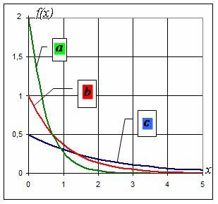
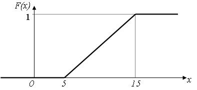
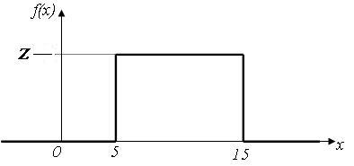
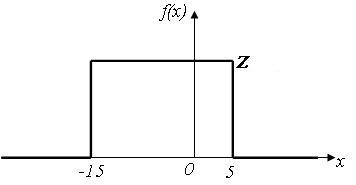
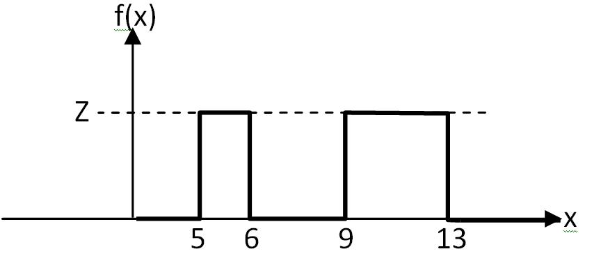
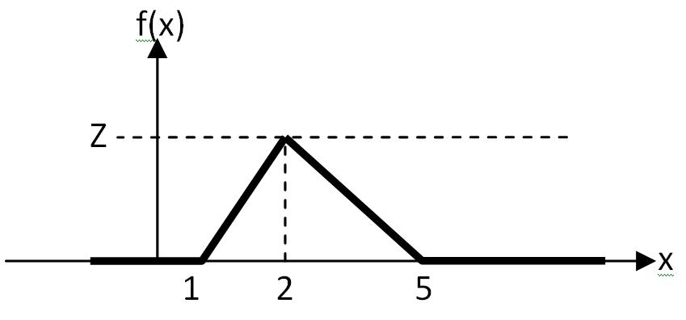
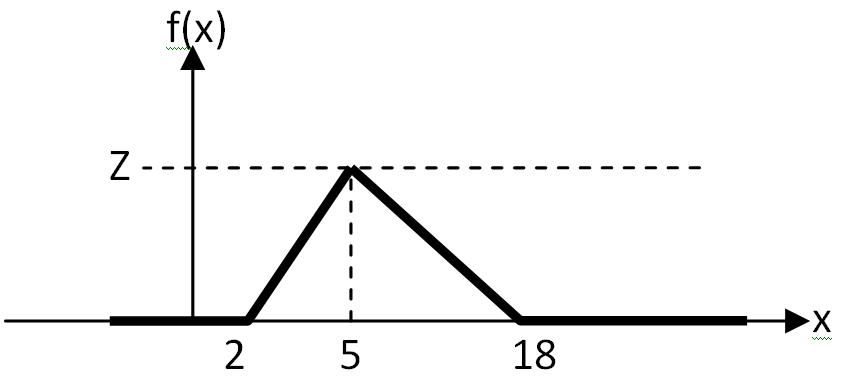

Тест Моделирование
1) Какие способы используются для описания структуры системы?
2) Замещение одного исходного объекта другим объектом и проведение с ним экспериментов с целью получения информации об
исходном объекте называется ...
- 1>моделированием
- 2>моделирование
- 3>Моделирование
- 4>Моделированием
3) Какие модели допускают количественное исследование свойств систем и процессов?
4) Преимуществом моделирования является то, что оно предоставляет возможность исследования объектов, прямой эксперимент с
которыми ...
- 1>трудно выполним
- 2>экономически невыгоден
- 3>невозможен
5) Совокупность взаимосвязанных элементов, объединенных в одно целое для достижения некоторой цели, называется ...
- 1>системой
- 2>система
- 3>Системой
- 4>Система
6) Минимальный неделимый объект в системе, рассматриваемый как единое целое, называется ...
- 1>элементом
- 2>элемент
- 3>Элементом
- 4>Элемент
7) Как называется система с большим числом входящих в его состав элементов и связей между ними?
8) Как называется совокупность взаимосвязанных систем?
- 1>комплекс
- 2>комплексом
- 3>Комплекс
- 4>Комплексом
9) С помощью перечня элементов (входящих в состав системы) и перечня связей между ними задается (...) системы?
- 1>структура
- 2>Структура
- 3>структурная организация
- 4>Структурная организация
10) Способы описания структуры системы.
- 1>графический
- 2>аналитический
11) Как называется правило достижения поставленной цели, описывающее поведение системы и направленное на получение
результатов, предписанных назначением системы?
- 1>функция
- 2>функция системы
- 3>функцией системы
- 4>функцией
12) Как называется способ описания функции системы в виде последовательностей шагов, которые должна выполнять система для
достижения поставленной цели?
- 1>алгоритмический
- 2>алгоритмическим
- 3>Алгоритмический
- 4>Алгоритмическим
13) Как называется способ описания функции системы в виде математических зависимостей в терминах некоторого математического
аппарата?
- 1>аналитический
- 2>аналитическим
- 3>Аналитический
- 4>Аналитическим
14) Процесс определения свойств, присущих системе называется...
15) К характеристикам системы относятся величины, описывающие её…
- 1>стоимость
- 2>производительность
- 3>надежность
- 4>оперативность
16) Способы описания функции системы.
- 1>аналитический
- 2>алгоритмический
- 3>графический
- 4>табличный
17) Величины, описывающие первичные свойства системы и являющиеся исходными данными при решении задач анализа называются ...
18) Какой метод моделирования является универсальным?
19) Способ достижения поставленной цели за счет выбора определенной структуры и функции системы называется (...) системы?
20) Как называется свойство системы, заключающееся в том, что она рассматривается как единое целое, состоящее из
взаимодействующих элементов, возможно неоднородных, но одновременно совместимых?
- 1>целостность
- 2>целостностью
- 3>Целостность
- 4>Целостностью
21) Какие утверждения являтся неверными?
- 1>система есть простая совокупности элементов
- 2>расчленяя систему на отдельные части и изучая каждую из них в отдельности, можно познать все свойства
- 3>система должна обладать свойством интеграции
- 4>система должна обладать интегральным свойством
22) Величины, описывающие вторичные свойства системы и определяемые в процессе решения задач анализа называется ...
23) Какие фундаментальные свойства присущи системе?
- 1>интегративность
- 2>целостность
- 3>связность
- 4>организованность
24) К параметрам системы относятся величины, описывающие …
- 1>структуру системы
- 2>нагрузку
- 3>функциональную организацию системы
25) Какие величины относятся к внутренним параметрам системы?
- 1>структурные
- 2>функциональные
26) Какие величины относятся к внешним параметрам системы?
- 1>нагрузочные
- 2>внешней среды
27) Какие характеристики технических систем относятся к глобальным?
- 1>производительности
- 2>временные
- 3>надёжности
- 4>стоимостные
28) Какой метод позволяет выполнять исследование систем на моделях любой степени детализации?
29) Наличие качеств, присущих системе в целом, но не свойственных ни одному из ее элементов в отдельности называется ...
- 1>интегративностью
- 2>интегративность
- 3>Интегративностью
- 4>Интегративность
30) Мера одного свойства системы -это...?
- 1>показатель эффективности
31) Степень соответствия системы своему назначению называется ...
32) Степень соответствия системы своему назначению называется ...
- 1>эффективностью
- 2>эффективность
33) Процесс порождения функций и структур, удовлетворяющих требованиям, предъявляемым к эффективности системы называется ...
34) Процесс порождения функций и структур, удовлетворяющих требованиям, предъявляемым к эффективности системы, называется
...
35) Процесс определения свойств, присущих системе, называется ...
- 1>анализ
- 2>анализом
- 3>Анализ
- 4>Анализом
36) Мера эффективности системы, обобщающая все свойства системы в одной оценке, называется ...
37) Если при увеличении эффективности значение критерия возрастает, то критерий называется ...
38) Как называется критерий эффективности, значение которого возрастает при увеличении эффективности системы?
- 1>прямой
- 2>прямым
- 3>Прямой
- 4>Прямым
39) Как называется критерий эффективности, значение которого уменьшается при увеличении эффективности системы?
- 1>инверсным
- 2>инверсный
- 3>Инверсный
- 4>Инверсным
40) Если при увеличении эффективности значение критерия уменьшается, то критерий называется ...
41) Как называется система, которой соответствует максимальное значение прямого критерия эффективности?
42) Как называется система, которой соответствует минимальное значение инверсного критерия эффективности?
43) Как называется система, которой соответствует максимальное значение прямого критерия эффективности?
- 1>оптимальная
- 2>оптимальной
- 3>Оптимальной
- 4>Оптимальная
44) Как называется система, которой соответствует минимальное значение инверсного критерия эффективности?
- 1>оптимальная
- 2>оптимальной
- 3>Оптимальная
- 4>Оптимальной
45) Процесс, протекающий в системе - это ...
- 1>смена состояний системы во времени
46) Как называется причина, вызывающая переход процесса из состояния в состояние?
- 1>событие
- 2>событием
- 3>Событие
- 4>Событием
47) Как называются процессы, для которых характерен плавный переход из состояния в состояние?
- 1>с непрерывными состояниями
48) Как называются процессы, для которых характерен плавный переход из состояния в состояние?
49) Как называются процессы, для которых характерен скачкообразный переход из состояния в состояние?
- 1>с дискретными состояниями
50) Как называются процессы, для которых характерен скачкообразный переход из состояния в состояние?
51) Как называется процесс, поведение которого может быть предсказано заранее?
- 1>детерминированный
- 2>детерминированным
- 3>Детерминированный
- 4>Детерминированным
52) Как называется процесс, поведение которого невозможно предсказать заранее?
- 1>случайный
- 2>вероятностный
- 3>стохастический
- 4>случайными
- 5>вероятностными
- 6>стохастическими
53) Как называется режим функционирования системы, при котором характеристики системы не зависят от времени?
54) Как называется режим функционирования системы, при котором характеристики системы зависят от времени?
55) Чем может быть обусловлен неустановившийся режим функционирования системы?
- 1>началом работы системы
- 2>нестационарностью параметров системы
- 3>перегрузкой системы
56) С чем связан переходной режим функционирования системы?
- 1>с началом работы системы
57) Как называется режим функционирования, при котором система не справляется с возложенной на нее нагрузкой?
58) Какие требования предъявляются к модели?
- 1>простота модели
- 2>адекватность исследуемой системе
59) Соответствие модели оригиналу, характеризуемое степенью близости свойств модели свойствам исследуемой системы,
называется ...
- 1>адекватностью
- 2>адекватность
60) Соответствие модели оригиналу, характеризуемое степенью близости свойств модели свойствам исследуемой системы,
называется ...
61) От чего зависит адекватность математических моделей?
- 1>уровня детализации модели
- 2>степени полноты и достоверности сведений об исследуемой системе
62) Моделирование может проводиться в условиях неопределенности, обусловленных:
- 1>неточностью сведений о параметрах
- 2>отсутствием сведений о значениях некоторых параметров
63) Что является синонимом понятия "вероятностная модель"?
64) Что является антонимом понятия "детерминированная модель"?
65) Что является синонимом понятия "содержательная модель"?
66) Что является синонимом понятия "концептуальная модель"?
67) Что является синонимом понятия "математическая модель"?
68) Какие модели являются абстрактными?
69) Что является синонимом понятия "материальная модель"?
70) Как называется модель, представляющая собой словесное описание только наиболее существенных особенностей
структурно-функциональной организации исследуемой системы?
- 1>концептуальная
- 2>концептуальной
- 3>содержательная
- 4>содержательной
71) Как называется модель, эквивалентная или подобная оригиналу или процесс функционирования которой такой же, как у
оригинала и имеет ту же или другую физическую природу?
- 1>физическая
- 2>физической
- 3>материальная
- 4>материальной
72) Установите соответствие моделей:
- 1>математическая ::: абстрактная
- 2>физическая ::: материальная
- 3>концептуальная ::: содержательная
- 4>программная ::: компьютерная
73) Установите соответствие моделей:
- 1>абстрактная ::: математическая
- 2>компьютерная ::: программная
- 3>содержательная ::: концептуальная
- 4>материальная ::: физическая
74) Установление соответствия между значениями системных и модельных параметров и характеристик выполняется на этапе ...
- 1>параметризации
- 2>параметризация
75) Укажите последовательность решения задач в процессе исследования сложных систем:
- 1>Разработка модели ::: 1
- 2>Анализ характеристик системы ::: 2
- 3>Синтез системы ::: 3
- 4>Детальный анализ синтезированной системы ::: 4
76) Какие методы математического моделирования получили наиболее широкое применение при исследовании технических систем с
дискретным характером функционирования?
- 1>аналитические
- 2>численные
- 3>имитационные
77) Основное достоинство имитационного моделирования?
78) Недостатки имитационного моделирования?
- 1>трудоемкость процесса моделирования
- 2>частный характер результатов
79) Вам достался счастливый вопрос :)
Чтобы набрать по нему 2 балла, введите без кавычек фразу: "Моделирование - это
круто!"
- 1>Моделирование - это круто!
80) Пусть F(x) - функция распределения количества детей в семье. Известно, что F(2) = 0.6.
Что это означает?
- 1>С вероятностью 0.6 в семье менее двух детей.
- 2>Вероятность того, что в семье более одного ребенка, равна 0.4
81) Как называются случайные величины, принимающие только отделенные друг от друга значения, которые можно пронумеровать?
82) Пусть xi - одно из n значений, которые может принимать дискретная случайная величина X, а pi - вероятность того, что Х =
xi (при i = 1,2,..n). Укажите, что рассчитвается с помощью формулы:

- 1>Математическое ожидание X
- 2>Первый начальный момент X
83) Пусть xi - одно из n значений, которые может принимать дискретная случайная величина X, а pi - вероятность того, что Х =
xi, и M[X] - мат.ожидание Х (при i = 1,2,..n). Укажите, что рассчитвается с помощью формулы:

- 1>Второй центральный момент
- 2>Дисперсия
84) Как называются случайные величины, которые могут принимать любое значение из некоторого промежутка?
85) Какие величины являются непрерывными?
- 1>время ожидания в очереди
- 2>температура воздуха
- 3>напряжение в электросети
86) Какие величины являются дискретными?
- 1>число зрителей на стадионе
- 2>количество переданных за единицу времени сообщений в компьютерной сети
87) Всякое соотношение, устанавливающее связь между возможными значениями случайной величины и соответствующими им
вероятностями, называется ...
88) Первый начальный момент случайной величины называется ...
- 1>математическим ожиданием
89) Второй центральный момент случайной величины называется ...
90) Что характеризует математическое ожидание случайной величины?
- 1>среднее значение случайной величины
91) Что характеризует дисперсия случайной величины?
- 1>разброс случайной величины относительно математического ожидания
92) Что характеризует среднеквадратическое отклонение случайной величины?
- 1>разброс случайной величины относительно математического ожидания
93) Что характеризует коэффициент вариации случайной величины?
- 1>разброс случайной величины относительно математического ожидания
94) Какие из перечисленных законов распределений являются дискретными?
- 1>Пуассона
- 2>геометрический
95) Какие из перечисленных законов распределений являются непрерывными?
- 1>экспоненциальный
- 2>равномерный
- 3>гипоэкспоненциальный
- 4>гиперэкспоненциальный
- 5>Эрланга
96) Пусть F(x) - функция распределения, а f(x) - плотность распределения непрерывной случайной величины Х. Чему равна
вероятность того, что X попадет в интервал [a; b] ?
- 1>

- 2>

97) Пусть F(x) - функция распределения, а f(x) - плотность распределения непрерывной случайной величины Х. Пусть также a <
b. Укажите, что можно рассчитать с помощью данной формулы:

- 1>P(a < x < b).
- 2>Вероятность того, что величина Х попадет в интервал [a; b] .
98) Функция распределения случайной величины …
99) Плотность распределения случайной величины ...
- 1>может быть как возрастающей функцией, так и убывающей
- 2>может принимать любые положительные значения
- 3>определяется как производная от функции распределения
100) Функция распределения случайной величины …
- 1>принимает значения в интервале (0, 1)
101) Укажите формулу преобразования плотности распределения f(x) в функцию распределения F(x) для случайных величин,
определённых в области действительных чисел.
- 1>

102) Укажите формулу преобразования плотности распределения f(x) в функцию распределения F(x) для случайных величин,
определённых в области положительных чисел.
- 1>

103) Какими из представленных ниже в виде формул свойствами обладает функция распределения F(x) случайной величины X?

104) Какими свойствами обладает функция распределения F(x) случайной величины X?
105) Какими свойствами не обладает функция распределения F(x) случайной величины X?
106) Пусть случайная величина Х измеряется в метрах. Какие из указанных величин являются безразмерными?
- 1>Коэффициент вариации случайной величины Х.
- 2>Вероятность того, что случайная величина Х примет значение 5.
- 3>Значение функции распределния случайной величины Х в точке 0.
107) Какую размерность имеет функция распределения случайной величины?
108) Какую размерность имеет плотность распределения случайной величины?
- 1>обратная размерности случайной величины
109) Какую размерность имеет плотность распределения случайной величины, принимающей значения от 1 до 100 секунд?
110) Какую размерность имеет функция распределения случайной величины, принимающей значения от 0 до 10 метров?
111) Какую размерность имеет плотность распределения времени обслуживания покупателей в магазине, измеряемого в секундах?
112) Какую размерность имеет функция распределения времени обслуживания покупателей в магазине, измеряемого в секундах?
113) Какую размерность имеет математическое ожидание времени обслуживания покупателей в магазине, измеряемого в секундах?
114) Какую размерность имеет дисперсия времени обслуживания покупателей в магазине, измеряемого в секундах?
115) Какую размерность имеет дисперсия случайной величины, измеряемой в секундах?
116) Какую размерность имеет среднеквадратическое отклонение времени передачи данных в компьютерной сети, измеряемого в
миллисекундах?
117) Какую размерность имеет математическое ожидание?
- 1>размерность случайной величины
118) Какую размерность имеет дисперсия?
- 1>квадрат размерности случайной величины
119) Какую размерность имеет среднеквадратическое отклонение?
- 1>размерность случйной величины
120) Какую размерность имеет коэффициент вариации?
121) Чему равна дисперсия детерминированной величины X=0,2?
122) Чему равен второй центральный момент детерминированной величины X=0,2?
123) Чему равна дисперсия детерминированной величины X=2?
124) Чему равен второй центральный момент детерминированной величины X=2?
125) Чему равна дисперсия детерминированной величины X=100?
126) Чему равна дисперсия детерминированной величины X=-10?
127) Чему равен коэффициент вариации детерминированной величины X=-10?
128) Чему равно среднеквадратическое отклонение детерминированной величины X=-25?
129) Чему равен второй начальный момент детерминированной величины X=-10?
130) Чему равен второй начальный момент детерминированной величины X=5?
131) Чему равен первый начальный момент детерминированной величины X=5?
132) Чему равен первый начальный момент детерминированной величины X=16?
133) Чему равно математическое ожидание равномерно распределённой в интервале (0; 1) случайной величины?
134) Чему равно математическое ожидание равномерно распределённой в интервале (10; 20) случайной величины?
135) Чему равно математическое ожидание равномерно распределённой в интервале (-20; +20) случайной величины?
136) Чему равно математическое ожидание равномерно распределённой в интервале (-20; +30) случайной величины?
137) Чему равно математическое ожидание равномерно распределённой в интервале (-20; +10) случайной величины?
138) Чему равно математическое ожидание равномерно распределённой в интервале (-100; -10) случайной величины?
139) Чему равно математическое ожидание равномерно распределённой в интервале (-10; -2) случайной величины?
140) Чему равно математическое ожидание детерминированной величины X>0, если её второй начальный момент равен 100?
141) Чему равно математическое ожидание детерминированной величины X<0, если её второй начальный момент равен 25?
142) Чему равно математическое ожидание детерминированной величины X>0, если её второй начальный момент равен 25?
143) Чему равно математическое ожидание детерминированной величины X<0, если её второй начальный момент равен 4?
144) Чему равно математическое ожидание детерминированной величины X>0, если её второй начальный момент равен 10000?
145) Чему равно математическое ожидание детерминированной величины X<0, если её второй начальный момент равен 10000?
146) Чему равен второй начальный момент детерминированной величины X=0?
147) Чему равен второй начальный момент детерминированной величины X=6?
148) Чему равен второй начальный момент детерминированной величины X=-6?
149) Чему равен второй начальный момент детерминированной величины X=11?
150) Чему равен второй начальный момент детерминированной величины X=-12?
151) Чему равно математическое ожидание детерминированной величины X>0, если её второй начальный момент равен 4?
152) Чему равен второй начальный момент детерминированной величины X=-7?
153) Чему равен третий начальный момент детерминированной величины X=-2?
154) Чему равен третий начальный момент детерминированной величины X=-3?
155) Чему равен третий начальный момент детерминированной величины X=1?
156) Чему равно максимально возможное значение равномерно распределённой случайной величины, определённой в области
положительных значений и имеющей математическое ожидание равное 20?
157) Чему равно максимально возможное значение равномерно распределённой случайной величины, определённой в области
положительных значений и имеющей математическое ожидание равное 15?
158) Чему равно максимально возможное значение равномерно распределённой случайной величины, определённой в области
положительных значений и имеющей математическое ожидание равное 200?
159) Чему равно минимально возможное значение равномерно распределённой случайной величины, определённой в области
отрицательных значений и имеющей математическое ожидание равное -20?
160) Чему равно минимально возможное значение равномерно распределённой случайной величины, определённой в области
отрицательных значений и имеющей математическое ожидание равное -200?
161) Чему равно минимально возможное значение равномерно распределённой случайной величины, определённой в области
отрицательных значений и имеющей математическое ожидание равное -0,5?
162) Чему равно минимально возможное значение равномерно распределённой случайной величины, имеющей максимально возможное
значение и математическое ожидание -10 и -20 соответственно?
163) Чему равно минимально возможное значение равномерно распределённой случайной величины, имеющей максимально возможное
значение и математическое ожидание -1 и -11 соответственно?
164) Чему равно минимально возможное значение равномерно распределённой случайной величины, имеющей максимально возможное
значение и математическое ожидание -2 и -5 соответственно?
165) Чему равно минимально возможное значение равномерно распределённой случайной величины, имеющей максимально возможное
значение и математическое ожидание -100 и -200 соответственно?
166) Чему равно минимально возможное значение равномерно распределённой случайной величины, имеющей максимально возможное
значение и математическое ожидание 20 и 0 соответственно?
167) Чему равно минимально возможное значение равномерно распределённой случайной величины, имеющей максимально возможное
значение и математическое ожидание 100 и 40 соответственно?
168) Чему равно минимально возможное значение равномерно распределённой случайной величины, имеющей максимально возможное
значение и математическое ожидание 80 и -20 соответственно?
169) Чему равно минимально возможное значение равномерно распределённой случайной величины, имеющей максимально возможное
значение и математическое ожидание 10 и -20 соответственно?
170) Чему равно минимально возможное значение равномерно распределённой случайной величины, имеющей максимально возможное
значение и математическое ожидание 50 и -25 соответственно?
171) Чему равно максимально возможное значение равномерно распределённой случайной величины, имеющей минимально возможное
значение и математическое ожидание -10 и 20 соответственно?
172) Чему равно максимально возможное значение равномерно распределённой случайной величины, имеющей минимально возможное
значение и математическое ожидание -20 и 10 соответственно?
173) Чему равно максимально возможное значение равномерно распределённой случайной величины, имеющей минимально возможное
значение и математическое ожидание -100 и -20 соответственно?
174) Чему равно максимально возможное значение равномерно распределённой случайной величины, имеющей минимально возможное
значение и математическое ожидание -55 и -5 соответственно?
175) Чему равно максимально возможное значение равномерно распределённой случайной величины, имеющей минимально возможное
значение и математическое ожидание -25 и 25 соответственно?
176) Чему равно математическое ожидание экспоненциально распределенной случайной величины, дисперсия которой равна 25?
177) Чему равно математическое ожидание экспоненциально распределенной случайной величины, дисперсия которой равна 100?
178) Чему равно математическое ожидание экспоненциально распределенной случайной величины, дисперсия которой равна 64?
179) Чему равно математическое ожидание экспоненциально распределенной случайной величины, дисперсия которой равна 16?
180) Чему равно математическое ожидание экспоненциально распределенной случайной величины, среднеквадратическое отклонение
которой равно 16?
181) Чему равно математическое ожидание экспоненциально распределенной случайной величины, среднеквадратическое отклонение
которой равно 6?
182) Чему равно математическое ожидание экспоненциально распределенной случайной величины, среднеквадратическое отклонение
которой равно 1?
183) Чему равно математическое ожидание экспоненциально распределенной случайной величины, среднеквадратическое отклонение
которой равно 100?
184) Чему равно математическое ожидание экспоненциально распределенной случайной величины, среднеквадратическое отклонение
которой равно 10000?
185) Чему равна дисперсия экспоненциально распределенной случайной величины, математическое ожидание которой равно 16?
186) Чему равна дисперсия экспоненциально распределенной случайной величины, математическое ожидание которой равно 1?
187) Чему равна дисперсия экспоненциально распределенной случайной величины, математическое ожидание которой равно 6?
188) Чему равна дисперсия экспоненциально распределенной случайной величины, математическое ожидание которой равно 100?
189) Чему равна дисперсия экспоненциально распределенной случайной величины, математическое ожидание которой равно 4?
190) Чему равно среднеквадратическое отклонение экспоненциально распределенной случайной величины, математическое ожидание
которой равно 100?
191) Чему равно среднеквадратическое отклонение экспоненциально распределенной случайной величины, математическое ожидание
которой равно 16?
192) Чему равно среднеквадратическое отклонение экспоненциально распределенной случайной величины, математическое ожидание
которой равно 20?
193) Чему равно среднеквадратическое отклонение экспоненциально распределенной случайной величины, математическое ожидание
которой равно 121?
194) Чему равно среднеквадратическое отклонение экспоненциально распределенной случайной величины, математическое ожидание
которой равно 10000?
195) Чему равен второй начальный момент экспоненциально распределенной случайной величины, математическое ожидание которой
равно 10?
196) Чему равен второй начальный момент экспоненциально распределенной случайной величины, математическое ожидание которой
равно 1?
197) Чему равен второй начальный момент экспоненциально распределенной случайной величины, математическое ожидание которой
равно 6?
198) Чему равен второй начальный момент экспоненциально распределенной случайной величины, математическое ожидание которой
равно 5?
199) Чему равен второй начальный момент экспоненциально распределенной случайной величины, математическое ожидание которой
равно 12?
200) Чему равен второй начальный момент экспоненциально распределенной случайной величины, дисперсия которой равна 10?
201) Чему равен второй начальный момент экспоненциально распределенной случайной величины, дисперсия которой равна 100?
202) Чему равен второй начальный момент экспоненциально распределенной случайной величины, дисперсия которой равна 6?
203) Чему равен второй начальный момент экспоненциально распределенной случайной величины, дисперсия которой равна 50?
204) Чему равен второй начальный момент экспоненциально распределенной случайной величины, дисперсия которой равна 36?
205) Чему равен второй начальный момент экспоненциально распределенной случайной величины, среднеквадратическое отклонение
которой равно 6?
206) Чему равен второй начальный момент экспоненциально распределенной случайной величины, среднеквадратическое отклонение
которой равно 10?
207) Чему равен второй начальный момент экспоненциально распределенной случайной величины, среднеквадратическое отклонение
которой равно 1?
208) Чему равен второй начальный момент экспоненциально распределенной случайной величины, среднеквадратическое отклонение
которой равно 20?
209) Чему равен второй начальный момент экспоненциально распределенной случайной величины, среднеквадратическое отклонение
которой равно 11?
210) В каких интервалах может изменяться равномерно распределённая случайная величина с математическим ожиданием равным 50?
- 1>0;100
- 2>-50; 150
- 3>-25; 125
211) В каких интервалах может изменяться равномерно распределённая случайная величина с математическим ожиданием равным 10?
212) В каких интервалах может изменяться равномерно распределённая случайная величина с математическим ожиданием равным -15?
- 1>-50; 20
- 2>-100; 70
- 3>-20; -10
- 4>-25; -5
213) В каких интервалах может изменяться равномерно распределённая случайная величина с математическим ожиданием равным -1?
214) Установите соответствие для равномерно распределённой случайной величины: [математическое ожидание] -( интервал
изменения)
- 1>[10] ::: (0; 20)
- 2>[-10] ::: (-25; 5)
- 3>[-5] ::: (-75; 65)
- 4>[1] ::: (-8; 10)
- 5>[-1] ::: (-8; 6)
215) Установите соответствие для равномерно распределённой случайной величины: [математическое ожидание] -( интервал
изменения)
- 1>[0] ::: (-5; 5)
- 2>[2] ::: (-4; 8)
- 3>[-2] ::: (-5; 1)
- 4>[1] ::: (-3; 5)
- 5>[-1] ::: (-3; 1)
216) Установите соответствие для равномерно распределённой случайной величины: [математическое ожидание] -( интервал
изменения)
- 1>[-12] ::: (-50; 26)
- 2>[-11] ::: (-50; 28)
- 3>[-10] ::: (-46; 26)
- 4>[-13] ::: (-50; 24)
- 5>[-14] ::: (-46; 18)
217) Установите соответствие для равномерно распределённой случайной величины: (интервал изменения) - математическое ожидание
- 1>(12; 24) ::: 18
- 2>(-12; 24) ::: 6
- 3>(-24; 12) ::: -6
- 4>(-24; 20) ::: -2
- 5>(-24; 0) ::: -12
218) Установите соответствие для равномерно распределённой случайной величины: (интервал изменения) - математическое ожидание
- 1>(-32; 4) ::: -14
- 2>(-30; 4) ::: -13
- 3>(-32; 8) ::: -12
- 4>(-32; 0) ::: -16
- 5>(-34; 0) ::: -17
219) Установите соответствие для равномерно распределённой случайной величины: (интервал изменения) - математическое ожидание
- 1>(-45; 5) ::: -20
- 2>(-95; 51) ::: -22
- 3>(-25; 1) ::: -12
- 4>(-95; 63) ::: -16
- 5>(-90; 54) ::: -18
220) Чему равно максимальное значение плотности распределения равномерно распределённой в интервале (0; 10) случайной
величины?
221) Чему равно максимальное значение плотности распределения равномерно распределённой в интервале (0; 1) случайной
величины?
222) Чему равно максимальное значение плотности распределения равномерно распределённой в интервале (-0,5; 0,5) случайной
величины?
223) Чему равно максимальное значение плотности распределения равномерно распределённой в интервале (-5; 5) случайной
величины?
224) Чему равно максимальное значение плотности распределения равномерно распределённой в интервале (-5; -4) случайной
величины?
225) Чему равно максимальное значение плотности распределения равномерно распределённой в интервале (-10; 10) случайной
величины?
226) Чему равно максимальное значение плотности распределения равномерно распределённой в интервале (-1; 1) случайной
величины?
227) Чему равно максимальное значение плотности распределения равномерно распределённой в интервале (3; 3,5) случайной
величины?
228) Чему равно максимальное значение плотности распределения равномерно распределённой в интервале (-7,5; -7) случайной
величины?
229) Чему равно максимальное значение плотности распределения равномерно распределённой в интервале (-7; -5) случайной
величины?
230) Чему равно максимальное значение плотности распределения равномерно распределённой в интервале (-0,55; -0,5) случайной
величины?
231) Чему равно максимальное значение плотности распределения равномерно распределённой в интервале (0,2; 0,3) случайной
величины?
232) Чему равно максимальное значение плотности распределения равномерно распределённой в интервале (0,6; 0,8) случайной
величины?
233) Чему равно минимальное значение плотности распределения равномерно распределённой в интервале (0,6; 0,8) случайной
величины?
234) Чему равно минимальное значение плотности распределения равномерно распределённой в интервале (0,2; 0,3) случайной
величины?
235) Чему равно значение функции распределения в точке х=0 случайной величины Х, равномерно распределённой в интервале (-6;
6)?
236) Чему равно значение функции распределения в точке х=0 случайной величины Х, равномерно распределённой в интервале (-1;
9)?
237) Чему равно значение функции распределения в точке х=0 случайной величины Х, равномерно распределённой в интервале (-9;
1)?
238) Чему равно значение функции распределения в точке х=0 случайной величины Х, равномерно распределённой в интервале (-3;
2)?
239) Чему равно значение функции распределения в точке х=0 случайной величины Х, равномерно распределённой в интервале (-2;
3)?
240) Чему равно значение функции распределения в точке х=0 случайной величины Х, равномерно распределённой в интервале (-0,3;
0,7)?
241) Чему равно значение функции распределения в точке х=-5 случайной величины Х, равномерно распределённой в интервале (-5;
5)?
242) Чему равно значение функции распределения в точке х=5 случайной величины Х, равномерно распределённой в интервале (-5;
5)?
243) Чему равно значение функции распределения в точке х=-15 случайной величины Х, равномерно распределённой в интервале
(-10; 15)?
244) Чему равно значение функции распределения в точке х=15 случайной величины Х, равномерно распределённой в интервале (-15;
10)?
245) Чему равно значение функции распределения в точке х=11 случайной величины Х, равномерно распределённой в интервале (-15;
10)?
246) Чему равно значение функции распределения в точке х=-30 случайной величины Х, равномерно распределённой в интервале
(-25; 10)?
247) Чему равно значение функции распределения в точке х=0 случайной величины Х, равномерно распределённой в интервале (5;
10)?
248) Чему равно значение функции распределения в точке х=-4 случайной величины Х, равномерно распределённой в интервале (5;
10)?
249) Чему равно значение функции распределения в точке х=0 случайной величины Х, равномерно распределённой в интервале (-50;
-10)?
250) Чему равно значение функции распределения в точке х=100 случайной величины Х, равномерно распределённой в интервале (25;
125)?
251) Чему равно значение функции распределения в точке х=-45 случайной величины Х, равномерно распределённой в интервале
(-100; 0)?
252) Чему равна вероятность того, что случайная величина Х, равномерно распределённая в интервале (5; 10), примет значение х<
5?
253) Чему равна вероятность того, что случайная величина Х, равномерно распределённая в интервале (5; 10), примет значение
х<20?
254) Чему равна вероятность того, что случайная величина Х, равномерно распределённая в интервале (0; 10), примет значение х<
5?
255) Чему равна вероятность того, что случайная величина Х, равномерно распределённая в интервале (5; 10), примет значение
х<10?
256) Чему равна вероятность того, что случайная величина Х, равномерно распределённая в интервале (-5; 0), примет значение
х<-2?
257) Чему равна вероятность того, что случайная величина Х, равномерно распределённая в интервале (-5; 0), примет значение
х<-3?
258) Чему равна вероятность того, что случайная величина Х, равномерно распределённая в интервале (-15; -10), примет значение
х<-20?
259) Чему равна вероятность того, что случайная величина Х, равномерно распределённая в интервале (-15; -10), примет значение
х<-12?
260) Чему равна вероятность того, что случайная величина Х, равномерно распределённая в интервале (-15; -5), примет значение
х<-2?
261) Чему равна вероятность того, что случайная величина Х, равномерно распределённая в интервале (-15; -5), примет значение
х<-6?
262) Чему равен коэффициент вариации экспоненциального распределения?
263) Чему равен коэффициент вариации детерминированной величины?
264) Какие значения может принимать коэффициент вариации экспоненциального распределения?
265) Какие значения может принимать коэффициент вариации детерминированной величины?
266) Какие значения может принимать коэффициент вариации гипоэкспоненциального распределения?
267) Какие значения может принимать коэффициент вариации гиперэкспоненциального распределения?
268) Какие значения может принимать коэффициент вариации распределения Эрланга?
269) Какие значения может принимать коэффициент вариации нормированного распределения Эрланга?
270) Какие значения может принимать коэффициент вариации гиперэрланговского распределения?
271) Чему равен коэффициент вариации распределения Эрланга 4-го порядка?
272) Чему равен коэффициент вариации нормированного распределения Эрланга 4-го порядка?
273) Чему равен коэффициент вариации распределения Эрланга 16-го порядка?
274) Чему равен коэффициент вариации нормированного распределения Эрланга 16-го порядка?
275) Чему равен коэффициент вариации распределения Эрланга 25-го порядка?
276) Чему равен коэффициент вариации нормированного распределения Эрланга 25-го порядка?
277) Чему равен коэффициент вариации распределения Эрланга 2-го порядка?
278) Чему равен коэффициент вариации нормированного распределения Эрланга 2-го порядка?
279) Чему равен коэффициент вариации распределения Эрланга 3-го порядка?
280) Чему равен коэффициент вариации нормированного распределения Эрланга 3-го порядка?
281) К какому распределению стремится распределение Эрланга при увеличении его порядка до бесконечности?
282) К какому распределению стремится нормированное распределение Эрланга при увеличении его порядка до бесконечности?
283) В какое распределение вырождается распределение Эрланга 1-го порядка?
284) В какое распределение вырождается нормированное распределение Эрланга 1-го порядка?
285) Дискретная случайная величина Х принимает значения: 10 или 20, причем первое значение появляется с вероятностью 0,2.
Чему равно математическое ожидание случайной величины?
286) Дискретная случайная величина Х принимает значения: 10 или 20, причем первое значение появляется с вероятностью 0,8.
Чему равно математическое ожидание случайной величины?
287) Дискретная случайная величина Х принимает значения: 10 или 20, причем первое значение появляется с вероятностью 0,4.
Чему равно математическое ожидание случайной величины?
288) Дискретная случайная величина Х принимает значения: 10 или 20, причем первое значение появляется с вероятностью 0,6.
Чему равно математическое ожидание случайной величины?
289) Дискретная случайная величина Х принимает значения: 10 или 20, причем первое значение появляется с вероятностью 0,5.
Чему равно математическое ожидание случайной величины?
290) Дискретная случайная величина Х может принимать значения: 100 или 20, причем первое значение появляется с вероятностью
0,2. Чему равно математическое ожидание случайной величины?
291) Дискретная случайная величина Х может принимать значения: 100 или 20, причем второе значение появляется с вероятностью
0,2. Чему равно математическое ожидание случайной величины?
292) Дискретная случайная величина Х может принимать значения: 100 или 20, причем первое значение появляется с вероятностью
0,3. Чему равно математическое ожидание случайной величины?
293) Дискретная случайная величина Х может принимать значения: 100 или 20, причем второе значение появляется с вероятностью
0,6. Чему равно математическое ожидание случайной величины?
294) Дискретная случайная величина Х может принимать значения: 100 или 20, причем второе значение появляется с вероятностью
0,9. Чему равно математическое ожидание случайной величины?
295) Дискретная случайная величина Х может принимать значения: 100 или 400, причем второе значение появляется с вероятностью
0,2. Чему равно математическое ожидание случайной величины?
296) Дискретная случайная величина Х может принимать значения: 100 или 400, причем первое значение появляется с вероятностью
0,5. Чему равно математическое ожидание случайной величины?
297) Дискретная случайная величина Х может принимать значения: 200 или 400, причем первое значение появляется с вероятностью
0,4. Чему равно математическое ожидание случайной величины?
298) Дискретная случайная величина Х может принимать значения: 200 или 400, причем первое значение появляется с вероятностью
0,7. Чему равно математическое ожидание случайной величины?
299) Дискретная случайная величина Х может принимать значения: 200 или 500, причем первое значение появляется с вероятностью
0,4. Чему равно математическое ожидание случайной величины?
300) Дискретная случайная величина Х может принимать значения: 200 или 500, причем первое значение появляется с вероятностью
0,9. Чему равно математическое ожидание случайной величины?
301) Дискретная случайная величина Х может принимать значения: 200 или 500, причем первое значение появляется с вероятностью
0,1. Чему равно математическое ожидание случайной величины?
302) Дискретная случайная величина Х может принимать значения: 10, 20 или 50 с вероятностями 0,7; 0,2 и 0,1 соответственно.
Чему равно математическое ожидание случайной величины?
303) Дискретная случайная величина Х может принимать значения: 10, 20 или 50 с вероятностями 0,5; 0,4 и 0,1 соответственно.
Чему равно математическое ожидание случайной величины?
304) Дискретная случайная величина Х может принимать значения: 10, 30 или 50 с вероятностями 0,7; 0,2 и 0,1 соответственно.
Чему равно математическое ожидание случайной величины?
305) Дискретная случайная величина Х может принимать значения: 10, 30 или 50 с вероятностями 0,5; 0,4 и 0,1 соответственно.
Чему равно математическое ожидание случайной величины?
306) Дискретная случайная величина Х может принимать значения: 100, 30 или 50 с вероятностями 0,5; 0,4 и 0,1 соответственно.
Чему равно математическое ожидание случайной величины?
307) Дискретная случайная величина Х может принимать значения: 100, 30 или 50 с вероятностями 0,1; 0,4 и 0,5 соответственно.
Чему равно математическое ожидание случайной величины?
308) Дискретная случайная величина Х может принимать значения: 90, 30 или 60 с равными вероятностями. Чему равно
математическое ожидание случайной величины?
309) Дискретная случайная величина Х с равными вероятностями может принимать значения: 100, 50 или 60. Чему равно
математическое ожидание случайной величины?
310) Дискретная случайная величина Х с равными вероятностями может принимать значения: 10, 40 или 70. Чему равно
математическое ожидание случайной величины?
311) Дискретная случайная величина Х с равными вероятностями может принимать значения: 1, 4 или 19. Чему равно математическое
ожидание случайной величины?
312) Математическое ожидание и второй начальный момент случайной величины Х соответственно равны 10 и 200. Чему равна
дисперсия случайной величины?
313) Математическое ожидание и второй начальный момент случайной величины Х соответственно равны 10 и 550. Чему равна
дисперсия случайной величины?
314) Математическое ожидание и второй начальный момент случайной величины Х соответственно равны 5 и 75. Чему равна дисперсия
случайной величины?
315) Математическое ожидание и второй начальный момент случайной величины Х соответственно равны 10 и 100. Чему равна
дисперсия случайной величины?
316) Математическое ожидание и второй начальный момент случайной величины Х соответственно равны 6 и 90. Чему равна дисперсия
случайной величины?
317) Математическое ожидание и второй начальный момент случайной величины Х соответственно равны 10 и 200. Чему равно
среднеквадратическое отклонение случайной величины?
318) Математическое ожидание и второй начальный момент случайной величины Х соответственно равны 5 и 61. Чему равно
среднеквадратическое отклонение случайной величины?
319) Математическое ожидание и второй начальный момент случайной величины Х соответственно равны 4 и 80. Чему равно
среднеквадратическое отклонение случайной величины?
320) Математическое ожидание и второй начальный момент случайной величины Х соответственно равны 3 и 25. Чему равно
среднеквадратическое отклонение случайной величины?
321) Математическое ожидание и второй начальный момент случайной величины Х соответственно равны 1 и 50. Чему равно
среднеквадратическое отклонение случайной величины?
322) Математическое ожидание и второй начальный момент случайной величины Х соответственно равны 5 и 50. Чему равен
коэффициент вариации случайной величины?
323) Математическое ожидание и второй начальный момент случайной величины Х соответственно равны 5 и 125. Чему равен
коэффициент вариации случайной величины?
324) Математическое ожидание и второй начальный момент случайной величины Х соответственно равны 5 и 250. Чему равен
коэффициент вариации случайной величины?
325) Математическое ожидание и второй начальный момент случайной величины Х соответственно равны 2 и 68. Чему равен
коэффициент вариации случайной величины?
326) Математическое ожидание и второй начальный момент случайной величины Х соответственно равны 2 и 104. Чему равен
коэффициент вариации случайной величины?
327) Математическое ожидание и второй начальный момент случайной величины Х соответственно равны 1 и 101. Чему равен
коэффициент вариации случайной величины?
328) Математическое ожидание и второй начальный момент случайной величины Х соответственно равны 4 и 160. Чему равен
коэффициент вариации случайной величины?
329) Математическое ожидание и второй начальный момент случайной величины Х соответственно равны 3 и 153. Чему равен
коэффициент вариации случайной величины?
330) Математическое ожидание и второй начальный момент случайной величины Х соответственно равны 4 и 160. Чему равен
коэффициент вариации случайной величины?
331) Математическое ожидание и второй начальный момент случайной величины Х соответственно равны 10 и 500. Чему равен
коэффициент вариации случайной величины?
332) Математическое ожидание и дисперсия случайной величины Х соответственно равны 10 и 400. Чему равен коэффициент вариации
случайной величины?
333) Математическое ожидание и дисперсия случайной величины Х соответственно равны 2 и 100. Чему равен коэффициент вариации
случайной величины?
334) Математическое ожидание и дисперсия случайной величины Х соответственно равны 2 и 36. Чему равен коэффициент вариации
случайной величины?
335) Математическое ожидание и дисперсия случайной величины Х соответственно равны 4 и 64. Чему равен коэффициент вариации
случайной величины?
336) Математическое ожидание и дисперсия случайной величины Х соответственно равны 5 и 100. Чему равен коэффициент вариации
случайной величины?
337) Математическое ожидание и дисперсия случайной величины Х соответственно равны 4 и 256. Чему равен коэффициент вариации
случайной величины?
338) Математическое ожидание и дисперсия случайной величины Х соответственно равны 2 и 400. Чему равен коэффициент вариации
случайной величины?
339) Математическое ожидание и дисперсия случайной величины Х соответственно равны 3 и 81. Чему равен коэффициент вариации
случайной величины?
340) Математическое ожидание и дисперсия случайной величины Х соответственно равны 3 и 144. Чему равен коэффициент вариации
случайной величины?
341) Второй начальный момент и дисперсия случайной величины Х соответственно равны 200 и 100. Чему равен коэффициент вариации
случайной величины?
342) Второй начальный момент и дисперсия случайной величины Х соответственно равны 500 и 400. Чему равен коэффициент вариации
случайной величины?
343) Второй начальный момент и дисперсия случайной величины Х соответственно равны 1000 и 900. Чему равен коэффициент
вариации случайной величины?
344) Второй начальный момент и дисперсия случайной величины Х соответственно равны 68 и 64. Чему равен коэффициент вариации
случайной величины?
345) Второй начальный момент и дисперсия случайной величины Х соответственно равны 40 и 36. Чему равен коэффициент вариации
случайной величины?
346) Второй начальный момент и дисперсия случайной величины Х соответственно равны 104 и 100. Чему равен коэффициент вариации
случайной величины?
347) Второй начальный момент и дисперсия случайной величины Х соответственно равны 360 и 324. Чему равен коэффициент вариации
случайной величины?
348) Второй начальный момент и дисперсия случайной величины Х соответственно равны 45 и 36. Чему равен коэффициент вариации
случайной величины?
349) Второй начальный момент и дисперсия случайной величины Х соответственно равны 234 и 225. Чему равен коэффициент вариации
случайной величины?
350) Второй начальный момент и дисперсия случайной величины Х соответственно равны 160 и 144. Чему равен коэффициент вариации
случайной величины?
351) Второй начальный момент и дисперсия случайной величины Х соответственно равны 125 и 100. Чему равен коэффициент вариации
случайной величины?
352) Второй начальный момент и дисперсия случайной величины Х ссоответственно равны 200 и 100. Чему равно математическое
ожидание случайной величины?
353) Второй начальный момент и дисперсия случайной величины Х ссоответственно равны 40 и 36. Чему равно математическое
ожидание случайной величины?
354) Второй начальный момент и дисперсия случайной величины Х ссоответственно равны 180 и 144. Чему равно математическое
ожидание случайной величины?
355) Второй начальный момент и дисперсия случайной величины Х ссоответственно равны 425 и 400. Чему равно математическое
ожидание случайной величины?
356) Второй начальный момент и дисперсия случайной величины Х ссоответственно равны 320 и 256. Чему равно математическое
ожидание случайной величины?
357) Дисперсия и второй начальный момент случайной величины Х ссоответственно равны 324 и 405. Чему равно математическое
ожидание случайной величины?
358) Дисперсия и второй начальный момент случайной величины Х ссоответственно равны 441 и 450. Чему равно математическое
ожидание случайной величины?
359) Дисперсия и второй начальный момент случайной величины Х ссоответственно равны 144 и 180. Чему равно математическое
ожидание случайной величины?
360) Дисперсия и второй начальный момент случайной величины Х ссоответственно равны 144 и 160. Чему равно математическое
ожидание случайной величины?
361) Дисперсия и второй начальный момент случайной величины Х ссоответственно равны 625 и 650. Чему равно математическое
ожидание случайной величины?
362) Дискретная случайная величина с равной вероятностью принимает целочисленные значения от -4 до 5 (включительно). Чему
равна вероятность того, что случайная величина примет значение больше 1?
363) Дискретная случайная величина с равной вероятностью принимает целочисленные значения от 1 до 10. Чему равна вероятность
того, что случайная величина примет значение больше 8?
364) Дискретная случайная величина с равной вероятностью принимает целочисленные значения от 22 до 31 (включительно). Чему
равна вероятность того, что случайная величина примет значение больше 22?
365) Дискретная случайная величина с равной вероятностью принимает целочисленные значения от 10 до 19 (включительно). Чему
равна вероятность того, что случайная величина примет значение больше 13?
366) Дискретная случайная величина с равной вероятностью принимает целочисленные значения от -17 до -8 (включительно). Чему
равна вероятность того, что случайная величина примет значение большее или равное -11?
367) Дискретная случайная величина с равной вероятностью принимает целочисленные значения от 0 до 4 (включительно). Чему
равна вероятность того, что случайная величина примет значение большее или равное 3?
368) Дискретная случайная величина Х с равной вероятностью принимает целочисленные значения на отрезке [-5.5; -0.7]. Чему
равна вероятность того, что случайная величина примет значение х>-4?
369) Дискретная случайная величина Х с равной вероятностью принимает целочисленные значения на отрезке [-5.5; -0.7]. Чему
равна вероятность того, что случайная величина примет значение х>-2?
370) Дискретная случайная величина Х с равной вероятностью принимает целочисленные значения на отрезке [-5.5; -0.7]. Чему
равна вероятность того, что случайная величина примет значение х<-4?
371) Среднеквадратическое отклонение и коэффициент вариации случайной величины Х ссоответственно равны 10 и 1. Чему равен
второй начальный момент случайной величины?
372) Среднеквадратическое отклонение и коэффициент вариации случайной величины Х ссоответственно равны 20 и 2. Чему равен
второй начальный момент случайной величины?
373) Среднеквадратическое отклонение и коэффициент вариации случайной величины Х ссоответственно равны 30 и 3. Чему равен
второй начальный момент случайной величины?
374) Среднеквадратическое отклонение и коэффициент вариации случайной величины Х ссоответственно равны 10 и 5. Чему равен
второй начальный момент случайной величины?
375) Среднеквадратическое отклонение и коэффициент вариации случайной величины Х ссоответственно равны 6 и 3. Чему равен
второй начальный момент случайной величины?
376) Среднеквадратическое отклонение и коэффициент вариации случайной величины Х ссоответственно равны 18 и 2. Чему равен
второй начальный момент случайной величины?
377) Среднеквадратическое отклонение и коэффициент вариации случайной величины Х ссоответственно равны 12 и 2. Чему равен
второй начальный момент случайной величины?
378) Среднеквадратическое отклонение и коэффициент вариации случайной величины Х ссоответственно равны 21 и 7. Чему равен
второй начальный момент случайной величины?
379) Среднеквадратическое отклонение и коэффициент вариации случайной величины Х ссоответственно равны 12 и 3. Чему равен
второй начальный момент случайной величины?
380) Среднеквадратическое отклонение и коэффициент вариации случайной величины Х ссоответственно равны 25 и 5. Чему равен
второй начальный момент случайной величины?
381) Каким из перечисленных распределений следует аппроксимировать полученное экспериментальным путём реальное распределение,
первый и второй начальные моменты которого соответственно равны 5 и 25?
382) Каким из перечисленных распределений следует аппроксимировать полученное экспериментальным путём реальное распределение,
первый и второй начальные моменты которого соответственно равны 10 и 100?
383) Каким из перечисленных распределений следует аппроксимировать полученное экспериментальным путём реальное распределение,
первый и второй начальные моменты которого соответственно равны 10 и 200?
384) Каким из перечисленных распределений следует аппроксимировать полученное экспериментальным путём реальное распределение,
первый и второй начальные моменты которого соответственно равны 4 и 32?
385) Каким из перечисленных распределений следует аппроксимировать полученное экспериментальным путём реальное распределение,
первый и второй начальные моменты которого соответственно равны 4 и 20?
386) Каким из перечисленных распределений следует аппроксимировать полученное экспериментальным путём реальное распределение,
первый и второй начальные моменты которого соответственно равны 2 и 5?
387) Каким из перечисленных распределений следует аппроксимировать полученное экспериментальным путём реальное распределение,
первый и второй начальные моменты которого соответственно равны 4 и 24?
388) Каким из перечисленных распределений следует аппроксимировать полученное экспериментальным путём реальное распределение,
первый и второй начальные моменты которого соответственно равны 6 и 40?
389) Каким из перечисленных распределений следует аппроксимировать полученное экспериментальным путём реальное распределение,
первый и второй начальные моменты которого соответственно равны 2 и 4,25?
390) Каким из перечисленных распределений следует аппроксимировать полученное экспериментальным путём реальное распределение,
первый и второй начальные моменты которого соответственно равны 5 и 125?
391) Каким из перечисленных распределений следует аппроксимировать полученное экспериментальным путём реальное распределение,
первый и второй начальные моменты которого соответственно равны 10 и 500?
392) Каким из перечисленных распределений следует аппроксимировать полученное экспериментальным путём реальное распределение,
первый начальный и второй центральный моменты которого соответственно равны 10 и 0?
393) Каким из перечисленных распределений следует аппроксимировать полученное экспериментальным путём реальное распределение,
первый начальный и второй центральный моменты которого соответственно равны 10 и 100?
394) Каким из перечисленных распределений следует аппроксимировать полученное экспериментальным путём реальное распределение,
первый начальный и второй центральный моменты которого соответственно равны 4 и 16?
395) Каким из перечисленных распределений следует аппроксимировать полученное экспериментальным путём реальное распределение,
первый начальный и второй центральный моменты которого соответственно равны 4 и 64?
396) Каким из перечисленных распределений следует аппроксимировать полученное экспериментальным путём реальное распределение,
первый начальный и второй центральный моменты которого соответственно равны 5 и 49?
397) Каким из перечисленных распределений следует аппроксимировать полученное экспериментальным путём реальное распределение,
первый начальный и второй центральный моменты которого соответственно равны 2 и 1?
398) Каким из перечисленных распределений следует аппроксимировать полученное экспериментальным путём реальное распределение,
первый начальный и второй центральный моменты которого соответственно равны 2 и 0,25?
399) Каким из перечисленных распределений следует аппроксимировать полученное экспериментальным путём реальное распределение,
первый начальный и второй центральный моменты которого соответственно равны 10 и 4?
400) Каким из перечисленных распределений следует аппроксимировать полученное экспериментальным путём реальное распределение,
первый начальный и второй центральный моменты которого соответственно равны 30 и 36?
401) Чему равно математическое ожидание случайной величина Х, распределённой по экспоненциальному закону (а)?

402) Чему равно математическое ожидание случайной величина Х, распределённой по экспоненциальному закону (b)?
403) Чему равно математическое ожидание случайной величина Х, распределённой по экспоненциальному закону (c)?
404) Какое экспоненциальное распределение (a, b или с) описывает случайную величину с наибольшим математическим
ожиданием?
405) Какое экспоненциальное распределение (a, b или с) описывает случайную величину с наименьшим математическим
ожиданием?
406) Какое экспоненциальное распределение (a, b или с) описывает случайную величину с наибольшей дисперсией?
407) Какое экспоненциальное распределение (a, b или с) описывает случайную величину с наименьшей дисперсией?
408) На каком рисунке (а, б, в или г) показана функция распределения случайной величины?

409) На каком рисунке (а, б, в или г) показана функция плотности распределения случайной величины?
410) На каком рисунке (а, б, в или г) показана гистограмма функции распределения случайной величины?
411) На каком рисунке (а, б, в или г) показана гистограмма плотности распределения случайной величины?
412) Случайная величина с функцией распределения, приведенной на рисунке, имеет (...) закон распределения. Вставьте
пропущенное слово.

- 1>равномерный
- 2>равномерному
413) Чему равно математическое ожидание случайной величины, имеющей распределение, показанное на рисунке?

414) Чему равно математическое ожидание случайной величины, имеющей распределение, показанное на рисунке?

415) Чему равно математическое ожидание случайной величины, имеющей распределение, показанное на рисунке?
416) Чему равно математическое ожидание случайной величины, имеющей распределение, показанное на рисунке?

417) Чему равно математическое ожидание случайной величины, имеющей распределение, показанное на рисунке?

418) Чему равна вероятность того, что случайная величина, имеющая распределение, показанное на рисунке, будет меньше
10?
419) Чему равна вероятность того, что случайная величина, имеющая распределение, показанное на рисунке, будет меньше
0?
420) Чему равна вероятность того, что случайная величина, имеющая распределение, показанное на рисунке, будет меньше
0?
421) Чему равна вероятность того, что случайная величина, имеющая распределение, показанное на рисунке, будет меньше
14?
422) Чему равна вероятность того, что случайная величина, имеющая распределение, показанное на рисунке, будет меньше
-3?
423) Чему равна вероятность того, что случайная величина, имеющая распределение, показанное на рисунке, будет меньше
-4?
424) Чему равна вероятность того, что случайная величина, имеющая распределение, показанное на рисунке, будет меньше
7?
425) Чему равна вероятность того, что случайная величина, имеющая распределение, показанное на рисунке, будет больше или
равна 7?
426) Чему равна вероятность того, что случайная величина, имеющая распределение, показанное на рисунке, будет больше или
равна 12?
427) Чему равна вероятность того, что случайная величина, имеющая распределение, показанное на рисунке, будет больше или
равна 11?
428) Чему равна вероятность того, что случайная величина, имеющая распределение, показанное на рисунке, будет больше или
равна 11?
429) Чему равна вероятность того, что случайная величина, имеющая распределение, показанное на рисунке, будет больше или
равна -11?
430) Чему равна вероятность того, что случайная величина, имеющая распределение, показанное на рисунке, будет больше или
равна -11?

431) Чему равна вероятность того, что случайная величина, имеющая распределение, показанное на рисунке, будет больше или
равна -2?

432) Чему равно значение Z плотности равномерного распределения, показанного на рисунке?

433) Чему равно значение Z плотности равномерного распределения, показанного на рисунке?

434) Чему равно значение Z плотности равномерного распределения, показанного на рисунке?

435) Чему равно значение Z плотности распределения, показанного на рисунке?

436) Чему равно значение Z плотности распределения, показанного на рисунке?

437) Чему равно значение Z плотности распределения, показанного на рисунке?

438) Чему равно значение Z плотности распределения, показанного на рисунке?

439) Чему равно значение Z плотности распределения, показанного на рисунке?

440) Чему равно значение Z плотности распределения, показанного на рисунке?

441) Чему равно значение Z плотности распределения, показанного на рисунке?

442) Чему равно значение Z плотности распределения, показанного на рисунке?

443) Чему равно математическое ожидание равномерного распределения, плотность которого показана на рисунке?
444) Чему равно математическое ожидание равномерного распределения, плотность которого показана на рисунке?
445) Чему равно математическое ожидание равномерного распределения, плотность которого показана на рисунке?
446) Чему равно математическое ожидание распределения, плотность которого показана на рисунке?
447) Чему равно математическое ожидание распределения, плотность которого показана на рисунке?
448) Чему равна вероятность того, что случайная величина, имеющая плотность распределения, показанную на рисунке, будет
больше или равна 12?
449) Чему равна вероятность того, что случайная величина, имеющая плотность распределения, показанную на рисунке, будет
больше или равна -3?
450) Чему равна вероятность того, что случайная величина, имеющая плотность распределения, показанную на рисунке, будет
больше или равна -160?
451) Чему равна вероятность того, что случайная величина, имеющая плотность распределения, показанную на рисунке, будет
меньше 12?
452) Чему равна вероятность того, что случайная величина, имеющая плотность распределения, показанную на рисунке, будет
меньше -15?
453) Чему равна вероятность того, что случайная величина, имеющая плотность распределения, показанную на рисунке, будет
меньше 0?
454) Чему равна вероятность того, что случайная величина, имеющая плотность распределения, показанную на рисунке, будет
меньше 2?
455) Чему равна вероятность того, что случайная величина, имеющая плотность распределения, показанную на рисунке, будет
меньше 4.5?
456) Чему равна вероятность того, что случайная величина, имеющая плотность распределения, показанную на рисунке, будет
больше 7?
457) Чему равна вероятность того, что случайная величина, имеющая плотность распределения, показанную на рисунке, будет
больше 4?
458) Чему равна вероятность того, что случайная величина, имеющая плотность распределения, показанную на рисунке, будет
больше 4?
459) Чему равна вероятность того, что случайная величина, имеющая плотность распределения, показанную на рисунке, будет
меньше 5.5?
460) Чему равна вероятность того, что случайная величина, имеющая плотность распределения, показанную на рисунке, будет
больше 6.3?
461) Чему равна вероятность того, что случайная величина, имеющая плотность распределения, показанную на рисунке, будет
больше 12?
462) Чему равна вероятность того, что случайная величина, имеющая плотность распределения, показанную на рисунке, будет
меньше 10?
463) Чему равно значение функции распределения F(9) случайной величины, плотность распределения которой показана на
рисунке?
464) Чему равно значение функции распределения F(0) случайной величины, плотность распределения которой показана на
рисунке?
465) Чему равно значение функции распределения F(0) случайной величины, плотность распределения которой показана на
рисунке?
466) Чему равно значение функции распределения F(1.5) случайной величины, плотность распределения которой показана на
рисунке?
467) Чему равно значение функции распределения F(3.8) случайной величины, плотность распределения которой показана на
рисунке?
468) Чему равно значение функции распределения F(7) случайной величины, плотность распределения которой показана на
рисунке?
469) Чему равно значение функции распределения F(3) случайной величины, плотность распределения которой показана на
рисунке?
470) Чему равно значение функции распределения F(6) случайной величины, плотность распределения которой показана на
рисунке?
471) Чему равно значение функции распределения F(5.5) случайной величины, плотность распределения которой показана на
рисунке?
472) Чему равно значение функции распределения F(12.5) случайной величины, плотность распределения которой показана на
рисунке?
473) Вам достался счастливый вопрос :) Он появляется в тесте с вероятностью около 3%.
Чтобы набрать 5 баллов, введите без
кавычек фразу: "Моделирование - это круто!"
- 1>Моделирование - это круто!
- 2>Моделирование-это круто!
- 3>моделирование - это круто!
- 4>моделирование-это круто!
474) Какое экспоненциальное распределение (a, b или с) описывает случайную величину с наименьшим коэффициентом
вариации?
- 1>коэффициенты вариации во всех случаях имеют одинаковое значение
475) Какое экспоненциальное распределение (a, b или с) описывает случайную величину с наибольшим коэффициентом
вариации?
- 1>коэффициенты вариации во всех случаях имеют одинаковое значение
476) Чему равна дисперсия случайной величина Х, распределённой по экспоненциальному закону (а)?
477) Чему равна дисперсия случайной величина Х, распределённой по экспоненциальному закону (b)?
478) Чему равна дисперсия случайной величина Х, распределённой по экспоненциальному закону (c)?
479) Чему равна вероятность того, что случайная величина, имеющая распределение, показанное на рисунке, будет больше или
равна 14.7?
480) Чему равна вероятность того, что случайная величина, имеющая распределение, показанное на рисунке, будет меньше или
равна 4.4?
481) Как называется процесс, который развивается в зависимости от ряда случайных факторов?
482) Какие понятия присущи любому случайному процессу?
- 1>состояние
- 2>переходы между состояниями
483) Как называется граф, в котором вершины соответствуют состояниям, а ориентированные дуги - переходам из одного состояния
в другое?
484) Как называется граф переходов, если на дугах графа указаны условия перехода в виде вероятностей или интенсивностей
переходов?
485) Что указывается на дугах размеченного графа переходов?
- 1>вероятности переходов
- 2>интенсивности переходов
486) Как называются состояния случайного процесса, если процесс после какого-то числа переходов непременно покидает их?
487) Как называются состояния случайного процесса, если процесс, достигнув этих состояний прекращается?
488) Как называется случайный процесс, в котором из любого состояния можно перейти за то или иное число шагов в любое другое
состояние и вернуться в исходное?
489) Как называется случайный процесс, в котором переход из одного состояния в другое происходит скачком?
- 1>Процесс с дискретными состояниями
490) Как называется случайный процесс, для которого характерен плавный переход из одного состояния в другое?
- 1>Процесс с непрерывными состояниями
491) Как называется дискретный случайный процесс, в котором переход из одного состояния в другое происходит в заранее
известные моменты времени?
492) Как называется дискретный случайный процесс, в котором переход из одного состояния в другое происходит в заранее
неизвестные моменты времени?
493) Как называется дискретный случайный процесс, в котором переход из одного состояния в другое происходит в случайные
моменты времени?
494) Как называется процесс, у которого вероятность состояния в будущем зависит только от состояния в настоящем и не зависит
от того, когда и каким образом процесс попал в это состояние?
495) По какому закону должны быть распределены интервалы времени между соседними переходами из состояния в состояние для
того, чтобы случайный процесс с непрерывным временем был марковским?
496) Как называется процесс, в котором переход из одного состояния в другое зависит только от состояния, в котором находится
процесс?
- 1>марковский
- 2>Марковский
- 3>марковским
- 4>Марковским
497) Какие параметры используются для описания марковского случайного процесса с дискретным временем?
- 1>перечень состояний, в которых может находиться система
- 2>матрица вероятностей переходов
- 3>начальные вероятности состояний
498) Какие параметры используются для описания марковского случайного процесса с непрерывным временем?
- 1>перечень состояний
- 2>матрица интенсивностей переходов
- 3>начальные вероятности состояний
499) Как для случайного процесса с непрерывным временем называется предел отношения вероятности перехода за бесконечно малый
промежуток времени к длине этого промежутка?
500) Что представляет собой нормировочное условие для марковского случайного процесса?
- 1>сумма вероятностей состояний равна 1
501) Какие процессы называют стохастическими последовательностями?
- 1>процессы с дискретным временем
502) Какие процессы называют случайными цепями?
503) Что является основной характеристикой марковского случайного процесса?
504) Какими из перечисленных свойств обладает эргодический процесс?
- 1>транзитивность
- 2>отсутствие невозвратных и поглощающих состояний
- 3>по истечении большого промежутка времени вероятности состояний стремятся к стационарным значениям
505) Какой является матрица интенсивностей переходов случайного процесса?
506) Какой является матрица вероятностей переходов случайного процесса?
507) Параметром какого распределения является интенсивность перехода марковского процесса?
508) Как называется марковский процесс, если интенсивности переходов постоянны и не зависят от времени?
509) Чему равна сумма вероятностей переходов случайного процесса в пределах одной строки матрицы переходов?
510) Чему равна сумма интенсивностей переходов случайного процесса в пределах одной строки матрицы переходов?
511) Из какого условия определяются диагональные элементы матрицы интенсивностей переходов случайного процесса?
- 1>сумма элементов строки должна быть равна 0
512) Если по истечении достаточно большого промежутка времени вероятности состояний стремятся к предельным значениям, не
зависящим от начальных вероятностей и от самого промежутка времени, то говорят, что случайный процесс обладает ...
513) Если случайный процесс обладает эргодическим свойством, то соответствующая система работает ...
- 1>в установивишемся режиме
514) Определить, обладает ли эргодическим свойством случайный процесс с дискретным временем со следующей матрицей
вероятностей переходов.

- 1>да
- 2>обладает
- 3>да, обладает
515) Определить, обладает ли эргодическим свойством случайный процесс с дискретным временем со следующей матрицей
вероятностей переходов.

- 1>нет
- 2>не обладает
- 3>нет, не обладает
516) Случайный процесс с непрерывным временем имеет два состояния. Интенсивность перехода из 1-го состояния во 2-е равна 12
1/с. Чему равна вероятность перехода из 1-го состояния во 2-е в момент времени 5 с (считая от начала наблюдения)?
- 1>0
- 2>нулю
- 3>Нулю
- 4>0,0
- 5>0.0
517) Как называется матрица вероятностей переходов, представленная на рисунке, в которой A, C и D - ненулевые подматрицы; 0 -
нулевая подматрица?

- 1>разложимая
- 2>Разложимая
- 3>разложимой
- 4>Разложимой
518) Как называется матрица вероятностей переходов, представленная на рисунке, в которой A, B и D - ненулевые подматрицы; 0 -
нулевая подматрица?

- 1>разложимая
- 2>Разложимая
- 3>разложимой
- 4>Разложимой
519) Как называется матрица вероятностей переходов, представленная на рисунке, в которой B и C - ненулевые подматрицы; 0 -
нулевая подматрица?

- 1>периодическая
- 2>Периодическая
- 3>периодической
- 4>Периодической
520) Чему равен элемент A в матрице интенсивностей переходов?

521) Чему равен элемент A в матрице вероятностей переходов?
522) Определить коэффициент загрузки СМО типа М/М/1/0, матрица интенсивностей переходов которой представлена на рисунке
(состояние 0 - в СМО нет заявок, состояние 1 - в СМО одна заявка):

- 1>0,75
- 2>0.75
- 3>,75
- 4>.75
- 5>3/4
523) Определить коэффициент простоя СМО типа М/М/1/0, матрица интенсивностей переходов которой представлена на рисунке
(состояние 0 - в СМО нет заявок, состояние 1 - в СМО одна заявка):
- 1>0,25
- 2>0.25
- 3>,25
- 4>.25
- 5>1/4
524) Определить вероятность потери заявок в СМО типа М/М/1/0, матрица интенсивностей переходов которой представлена на
рисунке (состояние 0 - в СМО нет заявок, состояние 1 - в СМО одна заявка):
- 1>0,75
- 2>0.75
- 3>.75
- 4>,75
- 5>3/4
525) Определить вероятность попадания на обслуживание заявки в СМО типа М/М/1/0 , матрица интенсивностей переходов которой
представлена на рисунке (состояние 0 - в СМО нет заявок, состояние 1 - в СМО одна заявка):
- 1>0,25
- 2>0.25
- 3>,25
- 4>.25
- 5>1/4
526) Определить среднее число заявок в СМО типа М/М/1/0, матрица интенсивностей переходов которой представлена на рисунке
(состояние 0 - в СМО нет заявок, состояние 1 - в СМО одна заявка):
- 1>0,75
- 2>0.75
- 3>,75
- 4>.75
- 5>3/4
527) Определить нагрузку СМО типа М/М/1/0, матрица интенсивностей переходов которой представлена на рисунке (состояние 0 - в
СМО нет заявок, состояние 1 - в СМО одна заявка):
528) Определить среднее число обслуживаемых заявок в СМО типа М/М/1/0, матрица интенсивностей переходов которой представлена
на рисунке (состояние 0 - в СМО нет заявок, состояние 1 - в СМО одна заявка):
- 1>0,75
- 2>0.75
- 3>,75
- 4>.75
- 5>3/4
529) Определить вероятность простоя обслуживающего прибора в СМО типа М/М/1/0, матрица интенсивностей переходов которой
представлена на рисунке (состояние 0 - в СМО нет заявок, состояние 1 - в СМО одна заявка):
- 1>0,25
- 2>0.25
- 3>,25
- 4>.25
- 5>1/4
530) Определить нагрузку СМО типа М/М/2/0, матрица интенсивностей переходов которой представлена на рисунке (состояние 0 - в
СМО нет заявок, состояние 1 - в СМО одна заявка, состояние 2 - в СМО две заявки):

531) Определить загрузку СМО типа М/М/2/0, матрица интенсивностей переходов которой представлена на рисунке (состояние 0 - в
СМО нет заявок, состояние 1 - в СМО одна заявка, состояние 2 - в СМО две заявки):
532) Определить коэффициент простоя СМО типа М/М/2/0, матрица интенсивностей переходов которой представлена на рисунке
(состояние 0 - в СМО нет заявок, состояние 1 - в СМО одна заявка, состояние 2 - в СМО две заявки):
533) Определить среднее число работающих приборов в СМО типа М/М/2/0, матрица интенсивностей переходов которой представлена
на рисунке (состояние 0 - в СМО нет заявок, состояние 1 - в СМО одна заявка, состояние 2 - в СМО две заявки):
534) Определить среднее число простаивающих приборов в СМО типа М/М/2/0, матрица интенсивностей переходов которой
представлена на рисунке (состояние 0 - в СМО нет заявок, состояние 1 - в СМО одна заявка, состояние 2 - в СМО две
заявки):
535) Определить среднее число заявок в СМО типа М/М/2/0, матрица интенсивностей переходов которой представлена на рисунке
(состояние 0 - в СМО нет заявок, состояние 1 - в СМО одна заявка, состояние 2 - в СМО две заявки):
536) Определить вероятность отказа в обслуживании заявок в СМО типа М/М/2/0, матрица интенсивностей переходов которой
представлена на рисунке (состояние 0 - в СМО нет заявок, состояние 1 - в СМО одна заявка, состояние 2 - в СМО две
заявки):
537) Определить вероятность принятия заявки на обслуживание в СМО типа М/М/2/0, матрица интенсивностей переходов которой
представлена на рисунке (состояние 0 - в СМО нет заявок, состояние 1 - в СМО одна заявка, состояние 2 - в СМО две
заявки):
538) Определить производительность СМО типа М/М/2/0, матрица интенсивностей переходов которой представлена на рисунке
(состояние 0 - в СМО нет заявок, состояние 1 - в СМО одна заявка, состояние 2 - в СМО две заявки):
539) Определить интенсивность потока потерянных заявок в СМО типа М/М/2/0, матрица интенсивностей переходов которой
представлена на рисунке (состояние 0 - в СМО нет заявок, состояние 1 - в СМО одна заявка, состояние 2 - в СМО две
заявки):
540) Определить среднее время пребывания заявок в СМО типа М/М/2/0, матрица интенсивностей переходов которой представлена на
рисунке (состояние 0 - в СМО нет заявок, состояние 1 - в СМО одна заявка, состояние 2 - в СМО две заявки):
541) Определить нагрузку СМО типа М/М/2/0, матрица интенсивностей переходов которой представлена на рисунке (состояние 0 - в
СМО нет заявок, состояние 1 - в СМО одна заявка, состояние 2 - в СМО две заявки):
542) Определить загрузку СМО типа М/М/2/0, матрица интенсивностей переходов которой представлена на рисунке (состояние 0 - в
СМО нет заявок, состояние 1 - в СМО одна заявка, состояние 2 - в СМО две заявки):
543) Определить коэффициент простоя СМО типа М/М/2/0, матрица интенсивностей переходов которой представлена на рисунке
(состояние 0 - в СМО нет заявок, состояние 1 - в СМО одна заявка, состояние 2 - в СМО две заявки):
544) Определить среднее число работающих приборов в СМО типа М/М/2/0, матрица интенсивностей переходов которой представлена
на рисунке (состояние 0 - в СМО нет заявок, состояние 1 - в СМО одна заявка, состояние 2 - в СМО две заявки):
545) Определить среднее число простаивающих приборов в СМО типа М/М/2/0, матрица интенсивностей переходов которой
представлена на рисунке (состояние 0 - в СМО нет заявок, состояние 1 - в СМО одна заявка, состояние 2 - в СМО две
заявки):
546) Определить среднее число заявок в СМО типа М/М/2/0, матрица интенсивностей переходов которой представлена на рисунке
(состояние 0 - в СМО нет заявок, состояние 1 - в СМО одна заявка, состояние 2 - в СМО две заявки):
547) Определить вероятность отказа в обслуживании заявок в СМО типа М/М/2/0, матрица интенсивностей переходов которой
представлена на рисунке (состояние 0 - в СМО нет заявок, состояние 1 - в СМО одна заявка, состояние 2 - в СМО две
заявки):
548) Определить вероятность принятия заявки на обслуживание в СМО типа М/М/2/0, матрица интенсивностей переходов которой
представлена на рисунке (состояние 0 - в СМО нет заявок, состояние 1 - в СМО одна заявка, состояние 2 - в СМО две
заявки):
549) Определить производительность СМО типа М/М/2/0, матрица интенсивностей переходов которой представлена на рисунке
(состояние 0 - в СМО нет заявок, состояние 1 - в СМО одна заявка, состояние 2 - в СМО две заявки):
550) Определить интенсивность потока потерянных заявок в СМО типа М/М/2/0, матрица интенсивностей переходов которой
представлена на рисунке (состояние 0 - в СМО нет заявок, состояние 1 - в СМО одна заявка, состояние 2 - в СМО две
заявки):
551) Определить среднее время пребывания заявок в СМО типа М/М/2/0, матрица интенсивностей переходов которой представлена на
рисунке (состояние 0 - в СМО нет заявок, состояние 1 - в СМО одна заявка, состояние 2 - в СМО две заявки):
552) Определить нагрузку СМО типа М/М/1/2, матрица интенсивностей переходов которой представлена на рисунке (номер состояния
равен количеству заявок в СМО):

553) Определить загрузку СМО типа М/М/1/2, матрица интенсивностей переходов которой представлена на рисунке (номер состояния
равен количеству заявок в СМО):
554) Определить коэффициент простоя СМО типа М/М/1/2, матрица интенсивностей переходов которой представлена на рисунке (номер
состояния равен количеству заявок в СМО):
555) Определить среднюю длину очереди в СМО типа М/М/1/2, матрица интенсивностей переходов которой представлена на рисунке
(номер состояния равен количеству заявок в СМО):
556) Определить среднее число заявок в СМО типа М/М/1/2, матрица интенсивностей переходов которой представлена на рисунке
(номер состояния равен количеству заявок в СМО):
557) Определить вероятность потери заявок в СМО типа М/М/1/2, матрица интенсивностей переходов которой представлена на
рисунке (номер состояния равен количеству заявок в СМО):
558) Определить вероятность попадания заявок в СМО типа М/М/1/2, матрица интенсивностей переходов которой представлена на
рисунке (номер состояния равен количеству заявок в СМО):
559) Определить производительность СМО типа М/М/1/2, матрица интенсивностей переходов которой представлена на рисунке (номер
состояния равен количеству заявок в СМО):
560) Определить интенсивность потока потерянных заявок в СМО типа М/М/1/2, матрица интенсивностей переходов которой
представлена на рисунке (номер состояния равен количеству заявок в СМО):
- 1>0,05
- 2>0.05
- 3>,05
- 4>.05
- 5>1/20
561) Определить среднее время ожидания заявок в СМО типа М/М/1/2, матрица интенсивностей переходов которой представлена на
рисунке (номер состояния равен количеству заявок в СМО):
562) Определить среднее время пребывания заявок в СМО типа М/М/1/2, матрица интенсивностей переходов которой представлена на
рисунке (номер состояния равен количеству заявок в СМО):
563) Определить интенсивность входящего потока заявок в СМО типа М/М/1/0, матрица интенсивностей переходов которой
представлена на рисунке (состояние 0 - в СМО нет заявок, состояние 1 - в СМО одна заявка):
564) Определить интенсивность обслуживания заявок в СМО типа М/М/1/0, матрица интенсивностей переходов которой представлена
на рисунке (состояние 0 - в СМО нет заявок, состояние 1 - в СМО одна заявка):
565) Определить интенсивность входящего потока заявок в СМО типа М/М/2/0, матрица интенсивностей переходов которой
представлена на рисунке (состояние 0 - в СМО нет заявок, состояние 1 - в СМО одна заявка, состояние 2 - в СМО две
заявки):
566) Определить интенсивность обслуживания заявок в СМО типа М/М/2/0, матрица интенсивностей переходов которой представлена
на рисунке (состояние 0 - в СМО нет заявок, состояние 1 - в СМО одна заявка, состояние 2 - в СМО две заявки):
567) Определить средний интервал между заявками во входящем потоке в СМО типа М/М/2/0, матрица интенсивностей переходов
которой представлена на рисунке (состояние 0 - в СМО нет заявок, состояние 1 - в СМО одна заявка, состояние 2 - в СМО
две заявки):
568) Определить среднюю длительность обслуживания заявок в СМО типа М/М/2/0, матрица интенсивностей переходов которой
представлена на рисунке (состояние 0 - в СМО нет заявок, состояние 1 - в СМО одна заявка, состояние 2 - в СМО две
заявки):
569) Определить интенсивность входящего потока заявок в СМО типа М/М/1/2, матрица интенсивностей переходов которой
представлена на рисунке (номер состояния равен количеству заявок в СМО):
570) Определить интенсивность обслуживания заявок в СМО типа М/М/1/2, матрица интенсивностей переходов которой представлена
на рисунке (номер состояния равен количеству заявок в СМО):
571) Определить средний интервал между заявками во входящем потоке в СМО типа М/М/1/2, матрица интенсивностей переходов
которой представлена на рисунке (номер состояния равен количеству заявок в СМО):
572) Определить среднюю длительность обслуживания заявок в СМО типа М/М/1/2, матрица интенсивностей переходов которой
представлена на рисунке (номер состояния равен количеству заявок в СМО):
573) Определить интенсивность выходящего потока заявок из СМО типа М/М/1/2, матрица интенсивностей переходов которой
представлена на рисунке (номер состояния равен количеству заявок в СМО):
574) Определить интенсивность выходящего потока заявок из СМО типа М/М/2/0, матрица интенсивностей переходов которой
представлена на рисунке (состояние 0 - в СМО нет заявок, состояние 1 - в СМО одна заявка, состояние 2 - в СМО две
заявки):
575) Определить нагрузку СМО типа М/М/2/0, матрица интенсивностей переходов которой представлена на рисунке (номер состояния
равен количеству заявок в СМО):

576) Определить интенсивность входящего потока заявок в СМО типа М/М/2/0, матрица интенсивностей переходов которой
представлена на рисунке (номер состояния равен количеству заявок в СМО):
577) Определить интенсивность обслуживания заявок в СМО типа М/М/2/0, матрица интенсивностей переходов которой представлена
на рисунке (номер состояния равен количеству заявок в СМО):
578) Определить средний интервал между заявками во входящем потоке в СМО типа М/М/2/0, матрица интенсивностей переходов
которой представлена на рисунке (номер состояния равен количеству заявок в СМО):
579) Определить среднюю длительность обслуживания заявок в СМО типа М/М/2/0, матрица интенсивностей переходов которой
представлена на рисунке (номер состояния равен количеству заявок в СМО):
580) Определить загрузку СМО типа М/М/2/0, матрица интенсивностей переходов которой представлена на рисунке (номер состояния
равен количеству заявок в СМО):
581) Определить коэффициент простоя СМО типа М/М/2/0, матрица интенсивностей переходов которой представлена на рисунке (номер
состояния равен количеству заявок в СМО):
582) Определить среднее число работающих приборов в СМО типа М/М/2/0, матрица интенсивностей переходов которой представлена
на рисунке (номер состояния равен количеству заявок в СМО):
583) Определить среднее число простаивающих приборов в СМО типа М/М/2/0, матрица интенсивностей переходов которой
представлена на рисунке (номер состояния равен количеству заявок в СМО):
584) Определить среднее число заявок в СМО типа М/М/2/0, матрица интенсивностей переходов которой представлена на рисунке
(номер состояния равен количеству заявок в СМО):
585) Определить вероятность потери заявок в СМО типа М/М/2/0, матрица интенсивностей переходов которой представлена на
рисунке (номер состояния равен количеству заявок в СМО):
586) Определить вероятность попадания заявок в СМО типа М/М/2/0, матрица интенсивностей переходов которой представлена на
рисунке (номер состояния равен количеству заявок в СМО):
587) Определить производительность СМО типа М/М/2/0, матрица интенсивностей переходов которой представлена на рисунке (номер
состояния равен количеству заявок в СМО):
588) Определить интенсивность потерянных заявок в СМО типа М/М/2/0, матрица интенсивностей переходов которой представлена на
рисунке (номер состояния равен количеству заявок в СМО):
589) Определить среднее время пребывания заявок в СМО типа М/М/2/0, матрица интенсивностей переходов которой представлена на
рисунке (номер состояния равен количеству заявок в СМО):
590) Определить интенсивность выходящего потока заявок из СМО типа М/М/2/0, матрица интенсивностей переходов которой
представлена на рисунке (номер состояния равен количеству заявок в СМО):
591) Опишите СМО, используя обозначения Кендалла, в которую поступают заявки с интенсивностью 0,2 заявки в секунду и
обслуживаются в среднем 4 секунды. Размеченный граф переходов марковского процесса функционирования СМО предстален на
рисунке (номер состояния равен количеству заявок в СМО):

592) Опишите СМО, используя обозначения Кендалла, в которую поступают заявки с интенсивностью 0,2 заявки в секунду и
обслуживаются в среднем 4 секунды. Размеченный граф переходов марковского процесса функционирования СМО предстален на
рисунке (номер состояния равен количеству заявок в СМО):
593) Опишите СМО, используя обозначения Кендалла, в которую поступают заявки с интенсивностью 0,2 заявки в секунду и
обслуживаются в среднем 4 секунды. Размеченный граф переходов марковского процесса функционирования СМО предстален на
рисунке (номер состояния равен количеству заявок в СМО):

594) Опишите СМО, используя обозначения Кендалла, в которую поступают заявки с интенсивностью 0,2 заявки в секунду и
обслуживаются в среднем 4 секунды. Размеченный граф переходов марковского процесса функционирования СМО предстален на
рисунке (номер состояния равен количеству заявок в СМО):
595) Опишите СМО, используя обозначения Кендалла, в которую поступают заявки с интенсивностью 0,2 заявки в секунду и
обслуживаются в среднем 4 секунды. Размеченный граф переходов марковского процесса функционирования СМО предстален на
рисунке (номер состояния равен количеству заявок в СМО):

596) Опишите СМО, используя обозначения Кендалла, в которую поступают заявки с интенсивностью 0,2 заявки в секунду и
обслуживаются в среднем 4 секунды. Размеченный граф переходов марковского процесса функционирования СМО предстален на
рисунке (номер состояния равен количеству заявок в СМО):
597) Опишите СМО, используя обозначения Кендалла, в которую поступают заявки с интенсивностью 0,2 заявки в секунду и
обслуживаются в среднем 4 секунды. Размеченный граф переходов марковского процесса функционирования СМО предстален на
рисунке (номер состояния равен количеству заявок в СМО):

598) Опишите СМО, используя обозначения Кендалла, в которую поступают заявки с интенсивностью 0,2 заявки в секунду и
обслуживаются в среднем 4 секунды. Размеченный граф переходов марковского процесса функционирования СМО предстален на
рисунке (номер состояния равен количеству заявок в СМО):
599) Опишите СМО, используя обозначения Кендалла, в которую поступают заявки с интенсивностью 0,2 заявки в секунду и
обслуживаются в среднем 4 секунды. Размеченный граф переходов марковского процесса функционирования СМО предстален на
рисунке (номер состояния равен количеству заявок в СМО):

600) Опишите СМО, используя обозначения Кендалла, в которую поступают заявки с интенсивностью 0,2 заявки в секунду и
обслуживаются в среднем 4 секунды. Размеченный граф переходов марковского процесса функционирования СМО предстален на
рисунке (номер состояния равен количеству заявок в СМО):
601) Определить, обладает ли эргодическим свойством случайный процесс с дискретным временем со следующей матрицей
вероятностей переходов.
- 1>да
- 2>обладает
- 3>да, обладает
602) Определить, обладает ли эргодическим свойством случайный процесс с дискретным временем со следующей матрицей
вероятностей переходов.
- 1>нет
- 2>не обладает
- 3>нет, не обладает
603) Случайный процесс с непрерывным временем имеет два состояния. Интенсивность перехода из 1-го состояния во 2-е равна 18
1/с. Чему равна вероятность перехода из 1-го состояния во 2-е в момент времени 9 с (считая от начала наблюдения)?
604) Случайный процесс с непрерывным временем имеет два состояния. Интенсивность перехода из 1-го состояния во 2-е равна 16
1/с. Чему равна вероятность перехода из 1-го состояния во 2-е в момент времени 8 с (считая от начала наблюдения)?
605) Случайный процесс с непрерывным временем имеет два состояния. Интенсивность перехода из 1-го состояния во 2-е равна 5
1/с. Чему равна вероятность перехода из 1-го состояния во 2-е в момент времени 15 с (считая от начала наблюдения)?
606) Случайный процесс с непрерывным временем имеет два состояния. Интенсивность перехода из 1-го состояния во 2-е равна 7
1/с. Чему равна вероятность перехода из 1-го состояния во 2-е в момент времени 14 с (считая от начала наблюдения)?
607) Чему равен элемент A в матрице интенсивностей переходов?

608) Чему равен элемент A в матрице вероятностей переходов?
609) Чему равен элемент A в матрице интенсивностей переходов?

610) Чему равен элемент A в матрице вероятностей переходов?
611) Какие элементы входят в состав СМО?
- 1>заявки
- 2>накопители
- 3>обслуживающие приборы
612) Сколько заявок одновременно может обслуживать один обслуживающий прибор?
613) По числу обслуживающих приборов СМО бывают ...
- 1>одноканальные
- 2>многоканальные
614) В зависимости от ёмкости накопителя СМО бывают ...
- 1>с потерями
- 2>с отказами
- 3>без потерь
615) По количеству классов заявок СМО бывают ...
- 1>с однородным потоком
- 2>с неоднородным потоком
616) Как называются СМО, в которых заявка, поступившая в систему и заставшая все обслуживающие приборы занятыми, теряется?
617) Как называются СМО, в которых поступившая заявка теряется, если она застает накопитель заполненным до конца?
618) Как называются СМО, в которых для любой поступившей заявки всегда найдется место в накопителе для ожидания?
619) Как называются СМО без накопителя?
620) Как называются СМО с накопителем ограниченной ёмкости?
621) Как называются СМО с накопителем неограниченной ёмкости?
622) Установите соответствие между классами СМО.
- 1>СМО без накопителя ::: СМО с отказами
- 2>СМО с накопителем ограниченной ёмкости ::: СМО с потерями
- 3>СМО с накопителем неограниченной ёмкости ::: СМО без потерь
- 4>СМО с одним обслуживающим прибором ::: СМО одноканальная
- 5>СМО с несколькими обслуживающими приборами ::: СМО многоканальная
- 6>СМО с одним классом заявок ::: СМО с однородным потоком
- 7>СМО с несколькими классами заявок ::: СМО с неоднородным потоком
623) Что естественно рассматривать в качестве ЗАЯВОК с системе массового обслуживания?
- 1>телефонные звонки, поступающие в службу поддержки компании "Х"
- 2>SQL-запросы к базе данных
- 3>пакеты с данными, циркулирующие в локальной вычислительной сети
624) Что естественно рассматривать в качестве ОБСЛУЖИВАЮЩИХ ПРИБОРОВ с системе массового обслуживания?
- 1>телефонные операторы в службе поддержки компании "Х", отвечающие на звонки
- 2>SQL-серверы, обрабатывающие запросы, поступающие к базе данных
- 3>каналы связи локальной вычислительной сети
625) Совокупность заявок, распределенных во времени, образуют ...
626) Задержка заявки на некоторое время в обслуживающем приборе - это ...
627) Что представляет собой процесс обслуживания заявки в приборе СМО?
- 1>задержка заявки в приборе на некоторое время
628) Как называется совокупность мест для ожидания заявок перед обслуживающим прибором в СМО?
629) Количество мест для ожидания заявок в СМО определяет ...
630) Заявки, находящиеся в накопителе и ожидающие обслуживания, образуют ...
631) Количество заявок, ожидающих обслуживания в накопителе, определяет ...
632) В каком случае оправдано предположение о неограниченной ёмкости накопителя в СМО?
- 1>когда вероятность потери заявки в реальной системе из-за переполнения ограниченной ёмкости накопит
633) Правило занесения поступающих заявок в накопитель - это ...
634) Правило выбора заявок из очереди для обслуживания в приборе - это ...
- 1>дисциплина обслуживания
635) Как называется преимущественное право заявок одного класса по отношению к заявкам других классов?
636) Какие предположения обычно используются при рассмотрении СМО?
- 1>заявка, поступившая в систему, мгновенно попадает на обслуживание, если прибор свободен
- 2>в приборе на обслуживании в каждый момент времени может находиться только одна заявка
- 3>после завершения обслуживания какой-либо заявки в приборе очередная заявка выбирается на обслуживание
- 4>поступление заявок в СМО и длительности их обслуживания не зависят от того, сколько заявок уже находится
- 5>длительность обслуживания заявок не зависит от интенсивности поступления заявок в систему
637) Совокупность взаимосвязанных систем массового обслуживания, в среде которых циркулируют заявки - это ...
638)
- 1>маршрутом
- 2>маршрут
- 3>Маршрут
639) Что является основной характеристикой потока заявок?
640) Среднее число заявок, проходящих через некоторую границу за единицу времени, называется ...
641) Что представляет собой величина, обратная интенсивности потока заявок?
- 1>средний интервал времени между двумя последовательными заявками
642) Что представляет собой величина, обратная среднему интервалу между последовательными заявкам в потоке?
- 1>интенсивность потока заявок
643) Что представляет собой величина, обратная средней длительности обслуживания заявок?
- 1>интенсивность обслуживания заявок
644) Что представляет собой величина, обратная интенсивности обслуживания заявок?
- 1>средняя длительность обслуживания в приборе
645) Как называется поток, в котором интервалы времени между соседними заявками принимают заранее известные, но, возможно, не
равные значения?
- 1>детерминированный
- 2>Детерминированный
- 3>детерминированным
646) Как называется поток, в котором интервалы времени между соседними заявками равны?
647) Как называется поток, в котором интервалы времени между соседними заявками принимают заранее неизвестные значения?
- 1>случайный
- 2>случайным
- 3>случайный поток
- 4>случайным потоком
648) Как называется поток, в котором интервалы времени между соседними заявками принимают заранее неизвестные значения?
649) Как называется случайный поток, в котором все интервалы между последовательными заявками независимы в совокупности и
описываются разными законами распределений?
- 1>с ограниченным последействием
650) Как называется случайный поток, в котором все интервалы между последовательными заявками распределены по одному и тому
же закону?
651) Как называется поток, в котором интенсивность поступления заявок и закон распределения интервалов между
последовательными заявками не меняются со временем?
652) Как называется поток, в котором интенсивность поступления заявок и закон распределения интервалов между
последовательными заявками не меняются со временем?
- 1>стационарный
- 2>стационарным
- 3>Стационарный
653) Как называется поток, в котором интенсивность поступления заявок и/или закон распределения интервалов между
последовательными заявками меняются со временем?
654) Как называется поток заявок, в котором в каждый момент времени может появиться только одна заявка?
655) Как называется поток заявок, в котором в каждый момент времени может появиться только одна заявка?
656) Как называется поток заявок, в котором в каждый момент времени может появиться несколько заявок?
657) Как называется поток заявок, в котором момент поступления очередной заявки не зависит от того, когда и сколько заявок
поступило до этого момента?
658) Как называется поток, в котором момент поступления очередной заявки не зависит от того, когда и сколько заявок поступило
до этого момента?
- 1>без последействия
- 2>поток без последействия
- 3>потоком без последействия
659) Чему равен коэффициент вариации интервалов между последовательными заявками в простейшем потоке заявок?
660) Чему равен коэффициент вариации интервалов между последовательными заявками в регулярном потоке?
661) Чему равен коэффициент вариации интервалов между последовательными заявками в эрланговском потоке?
662) Чему равен коэффициент вариации интервалов между последовательными заявками в гиперэкспоненциальном потоке?
663) Как называется стационарный ординарный поток заявок без последействия?
- 1>простейший
- 2>простейшим
- 3>простейший поток
- 4>простейшим потоком
- 5>Пуассоновский
- 6>пуассоновский
- 7>Пуассоновским
- 8>пуассоновским
664) Как называется стационарный ординарный поток заявок без последействия?
665) Какими свойствами обладает простейший поток?
- 1>стационарный
- 2>ординарный
- 3>без последействия
666) По какому закону распределены интервалы времени между заявками в простейшем потоке?
667) По какому закону распределены интервалы времени между заявками в простейшем потоке?
668) По какому закону распределено число заявок, поступающих за некоторый заданный промежуток времени в простейшем потоке?
- 1>Пуассона
- 2>Пуассоновскому
- 3>пуассоновский
- 4>пуассоновскому
- 5>по закону Пуассона
- 6>по закону пуассона
- 7>по пуассоновскому
- 8>по Пуассоновскому
- 9>Пуассоновский
669) По какому закону распределено число заявок, поступающих за некоторый заданный промежуток времени в простейшем потоке?
670) Какие замечательные особенности присущи простейшему потоку заявок?
- 1>Сумма независимых простейших потоков образует простейший поток
- 2>Вероятностное разрежение простейшего потока заявок приводит к образованию простейшего потока
- 3>Предположение о простейшем потоке заявок во многих случаях позволяет получить в явном виде ана
671) Какой поток образуется в результате суммирования нескольких независимых стационарных ординарных потоков заявок?
672) Какие потоки образуются в результате вероятностного разрежения простейшего потока заявок на девять подпотоков?
673) Какой поток образуется в результате вероятностного разрежения простейшего потока заявок на четыре подпотока?
674) Какой поток образуется, если в него направляется строго каждая вторая заявка некоторого исходного простейшего потока?
675) Какой поток образуется, если в него направляется строго каждая третья заявка некоторого исходного простейшего потока?
676) Какой поток образуется, если в него направляется строго каждая четвертая заявка некоторого исходного простейшего потока?
677) По какому закону распределены интервалы между последовательными заявками в потоке, образованном в результате
вероятностного разрежения простейшего потока заявок с образованием двух потоков?
678) По какому закону распределены интервалы между последовательными заявками в потоке, образованном в результате
вероятностного разрежения простейшего потока заявок с образованием трех потоков?
679) По какому закону распределены интервалы между последовательными заявками в потоке, образованном в результате
вероятностного разрежения простейшего потока заявок с образованием четырех потоков?
- 1>экспоненциальному
- 2>по экспоненциальному
- 3>экспоненциальный
- 4>Экспоненциальный
680) Простейший поток подвергается детерминированному разрежению: он разделяется на два потока так, что в первый из них идет
строго каждая вторая заявка исходного простейшего потока. По какому закону распределены интервалы в первом из
получившихся потоков?
681) Простейший поток подвергается детерминированному разрежению: он разделяется на три потока так, что в первый из них идет
строго каждая четвертая заявка исходного простейшего потока. По какому закону распределены интервалы в первом из
получившихся потоков?
682) Простейший поток подвергается детерминированному разрежению: он разделяется на четыре потока так, что в первый из них
идет строго каждая пятая заявка исходного простейшего потока. По какому закону распределены интервалы в первом из
получившихся потоков?
683) По какому закону распределены интервалы между последовательными заявками в потоке, образованном в результате
суммирования нескольких (пяти и более) независимых стационарных ординарных потоков заявок?
684) По какому закону распределены интервалы между последовательными заявками в потоке, образованном в результате
суммирования пяти независимых простейших потоков заявок?
- 1>экспоненциальному
- 2>по экспоненциальному
- 3>экспоненциальный
- 4>Экспоненциальный
685) Какие дисциплины обслуживания относятся к дисциплинам одиночного режима?
- 1>обслуживание в порядке поступления
- 2>обслуживание в обратном порядке
- 3>обслуживание в случайном порядке
- 4>с относительными приоритетами
- 5>с абсолютными приоритетами
686) Какие дисциплины обслуживания относятся к дисциплинам группового режима?
- 1>с чередующимися приоритетами
- 2>обслуживание по расписанию
687) Как называется способ (режим) назначения заявок на обслуживание, при котором всякий раз на обслуживание назначается
только одна заявка?
688) Как называется способ (режим) назначения заявок на обслуживание, при котором всякий раз на обслуживание назначается
группа заявок одной очереди?
689) Укажите англоязычную аббревиатуру дисциплины обслуживания, при которой заявки обслуживаются в порядке поступления.
690) Какие дисциплины обслуживания относятся к бесприоритетным?
- 1>обслуживание в обратном поступлению порядке
- 2>обслуживание в порядке поступления
- 3>обслуживание в циклическом порядке
- 4>обслуживание в случайном порядке
691) Какие дисциплины обслуживания относятся к приоритетным?
- 1>обслуживание с абсолютными приоритетами
- 2>обслуживание с относительными приоритетами
- 3>обслуживание со смешанными приоритетами
- 4>обслуживание по расписанию
- 5>обслуживание с чередующимися приоритетами
692) Какие дисциплины обслуживания относятся к бесприоритетным дисциплинам одиночного режима?
- 1>обслуживание в порядке поступления
- 2>обслуживание порядке, обратном поступлению
- 3>обслуживание в случайном порядке
693) Какие дисциплины обслуживания относятся к приоритетным дисциплинам одиночного режима?
- 1>обслуживание с относительными приоритетами
- 2>обслуживание с абсолютными приоритетами
- 3>обслуживание со смешанными приоритетами
694) Какие дисциплины обслуживания относятся к бесприоритетным дисциплинам группового режима?
- 1>обслуживание в циклическом порядке
695) Какие дисциплины обслуживания относятся к приоритетным дисциплинам группового режима?
- 1>обслуживание по расписанию
- 2>обслуживание с чередующимися приоритетами
696) Каким образом заявки выбираются на обслуживание, если используется дисциплина обслуживания с относительными
приоритетами?
- 1>при освобождении прибора на обслуживание выбирается заявка с максимальным приоритетом
697) При какой дисциплине возможно прерыванние обслуживания?
- 1>обслуживание с абсолютными приоритетами
698) Как называются СеМО, в которых процессы поступления и/или обслуживания заявок носят случайный характер?
699) Как называется СеМО, в которой процессы поступления и/или обслуживания заявок носят случайный характер?
- 1>стохастическая
- 2>вероятностная
700) Как называется СеМО, в которой интенсивности потоков заявок в разных узлах СеМО пропорциональны друг другу?
- 1>линейной
- 2>линейная
- 3>Линейная
- 4>Линейной
701) Как называется коэффициент, показывающий, во сколько раз интенсивность потока заявок в некоторый узел сети отличается от
интенсивности источника заявок?
702) Коэффициент передачи можно трактовать как ...
- 1>среднее число попаданий заявки в данный узел за время ее нахождения в сети
703) В каких случаях СеМО будет нелинейной?
- 1>если в СеМО заявки теряются
- 2>если в СеМО заявки размножаются
704) В каких случаях СеМО будет линейной?
- 1>если заявки не теряются
- 2>если заявки не размножаются
705) Что является основными признаками разомкнутых СеМО?
- 1>содержит один или несколько внешних независимых источников заявок
- 2>в СеМО одновременно может находиться любое число заявок
706) Что является основными признаками замкнутых СеМО?
- 1>не содержит внешние независимые источники заявок
- 2>в СеМО находится постоянное число заявок
707) Как называются СеМО, в которых циркулирует один класс заявок?
- 1>однородные
- 2>однородными
708) Как называются СеМО, в которых циркулирует несколько классов заявок?
- 1>неоднородные
- 2>неоднородными
709) Какие факторы обусловливают неоднородность СеМО?
- 1>разные длительности обслуживания заявок в узлах
- 2>наличие приоритетов между завками
- 3>разные маршруты заявок
710) Заявки в СеМО следует относить к разным классам, если они различаются ...
- 1>длительностями обслуживания хотя бы в одном из узлов
- 2>приоритетами
- 3>маршрутами
711) Заявки в СеМО представляются в виде одного класса, если они ...
- 1>имеют одинаковые длительности обслуживания в узлах сети
- 2>не имеют приоритетов по отношению к друг другу
- 3>имеют одинаковые маршруты
712) В СМО М/М/1 поступает поток заявок с интенсивностью 0,1 заявки в секунду, интенсивность обслуживания которых равна 0,2
заявки в секунду. Определить средний интервал времени между заявками во входящем потоке.
713) В СМО М/М/1 поступает поток заявок с интенсивностью 0,1 заявки в секунду, интенсивность обслуживания которых равна 0,2
заявки в секунду. Определить среднюю длительность обслуживания.
714) В СМО М/М/1 поступает поток заявок с интенсивностью 0,1 заявки в секунду, интенсивность обслуживания которых равна 0,2
заявки в секунду. Определить нагрузку системы.
715) В СМО М/М/1 поступает поток заявок с интенсивностью 0,1 заявки в секунду, интенсивность обслуживания которых равна 0,2
заявки в секунду. Определить загрузку системы.
716) В СМО М/М/1 поступает поток заявок с интенсивностью 0,1 заявки в секунду, интенсивность обслуживания которых равна 0,2
заявки в секунду. Определить вероятность работы обслуживающего прибора.
717) В СМО М/М/1 поступает поток заявок с интенсивностью 0,1 заявки в секунду, интенсивность обслуживания которых равна 0,2
заявки в секунду. Определить долю времени, в течение которого обслуживающий прибор работает.
718) В СМО М/М/1 поступает поток заявок с интенсивностью 0,1 заявки в секунду, интенсивность обслуживания которых равна 0,2
заявки в секунду. Определить среднее число заявок, находящихся на обслуживании.
719) В СМО М/М/1 поступает поток заявок с интенсивностью 0,1 заявки в секунду, интенсивность обслуживания которых равна 0,2
заявки в секунду. Определить среднее число заявок, поступающих в СМО за время обслуживания одной заявки.
720) В СМО М/М/1 поступает поток заявок с интенсивностью 0,1 заявки в секунду, интенсивность обслуживания которых равна 0,2
заявки в секунду. Определить коэффициент простоя системы.
721) В СМО М/М/1 поступает поток заявок с интенсивностью 0,1 заявки в секунду, интенсивность обслуживания которых равна 0,2
заявки в секунду. Определить вероятность того, что обслуживающий прибор простаивает.
722) В СМО М/М/1 поступает поток заявок с интенсивностью 0,1 заявки в секунду, интенсивность обслуживания которых равна 0,2
заявки в секунду. Определить долю времени, в течение которого обслуживающий прибор не работает.
723) В СМО М/М/1 поступает поток заявок с интенсивностью 0,1 заявки в секунду, интенсивность обслуживания которых равна 0,2
заявки в секунду. Определить среднюю длину очереди.
724) В СМО М/М/1 поступает поток заявок с интенсивностью 0,1 заявки в секунду, интенсивность обслуживания которых равна 0,2
заявки в секунду. Определить среднее число заявок в накопителе.
725) В СМО М/М/1 поступает поток заявок с интенсивностью 0,1 заявки в секунду, интенсивность обслуживания которых равна 0,2
заявки в секунду. Определить среднее число заявок в системе.
726) В СМО М/М/1 поступает поток заявок с интенсивностью 0,1 заявки в секунду, интенсивность обслуживания которых равна 0,2
заявки в секунду. Определить среднее время ожидания заявок.
727) В СМО М/М/1 поступает поток заявок с интенсивностью 0,1 заявки в секунду, интенсивность обслуживания которых равна 0,2
заявки в секунду. Определить среднее время пребывания заявок в системе.
728) В СМО М/М/1 поступает поток заявок с интенсивностью 0,1 заявки в секунду, средняя длительность обслуживания которых
равна 5 секундам. Определить средний интервал времени между заявками во входящем потоке.
729) В СМО М/М/1 поступает поток заявок с интенсивностью 0,1 заявки в секунду, средняя длительность обслуживания которых
равна 5 секундам. Определить интенсивность обслуживания заявок.
730) В СМО М/М/1 поступает поток заявок с интенсивностью 0,1 заявки в секунду, средняя длительность обслуживания которых
равна 5 секундам. Определить нагрузку системы.
731) В СМО М/М/1 поступает поток заявок с интенсивностью 0,1 заявки в секунду, средняя длительность обслуживания которых
равна 5 секундам. Определить загрузку системы.
732) В СМО М/М/1 поступает поток заявок с интенсивностью 0,1 заявки в секунду, средняя длительность обслуживания которых
равна 5 секундам. Определить вероятность работы обслуживающего прибора.
733) В СМО М/М/1 поступает поток заявок с интенсивностью 0,1 заявки в секунду, средняя длительность обслуживания которых
равна 5 секундам. Определить долю времени, в течение которого обслуживающий прибор работает.
734) В СМО М/М/1 поступает поток заявок с интенсивностью 0,1 заявки в секунду, средняя длительность обслуживания которых
равна 5 секундам. Определить среднее число заявок, находящихся на обслуживании.
735) В СМО М/М/1 поступает поток заявок с интенсивностью 0,1 заявки в секунду, средняя длительность обслуживания которых
равна 5 секундам. Определить среднее число заявок, поступающих в СМО за время обслуживания одной заявки.
736) В СМО М/М/1 поступает поток заявок с интенсивностью 0,1 заявки в секунду, средняя длительность обслуживания которых
равна 5 секундам. Определить коэффициент простоя системы.
737) В СМО М/М/1 поступает поток заявок с интенсивностью 0,1 заявки в секунду, средняя длительность обслуживания которых
равна 5 секундам. Определить вероятность того, что обслуживающий прибор простаивает.
738) В СМО М/М/1 поступает поток заявок с интенсивностью 0,1 заявки в секунду, средняя длительность обслуживания которых
равна 5 секундам. Определить долю времени, в течение которого обслуживающий прибор не работает.
739) В СМО М/М/1 поступает поток заявок с интенсивностью 0,1 заявки в секунду, средняя длительность обслуживания которых
равна 5 секундам. Определить среднюю длину очереди заявок.
740) В СМО М/М/1 поступает поток заявок с интенсивностью 0,1 заявки в секунду, средняя длительность обслуживания которых
равна 5 секундам. Определить среднее число заявок в накопителе.
741) В СМО М/М/1 поступает поток заявок с интенсивностью 0,1 заявки в секунду, средняя длительность обслуживания которых
равна 5 секундам. Определить среднее число заявок в системе.
742) В СМО М/М/1 поступает поток заявок с интенсивностью 0,1 заявки в секунду, средняя длительность обслуживания которых
равна 5 секундам. Определить среднее время ожидания заявок.
743) В СМО М/М/1 поступает поток заявок с интенсивностью 0,1 заявки в секунду, средняя длительность обслуживания которых
равна 5 секундам. Определить среднее время пребывания заявок в системе.
744) В СМО М/М/1 поступает поток заявок со средним интервалом между заявками 10 секунд, интенсивность обслуживания которых
равна 0,2 заявки в секунду. Определить интенсивность поступления заявок в СМО.
745) В СМО М/М/1 поступает поток заявок со средним интервалом между заявками 10 секунд, интенсивность обслуживания которых
равна 0,2 заявки в секунду. Определить среднюю длительность обслуживания заявок.
746) В СМО М/М/1 поступает поток заявок со средним интервалом между заявками 10 секунд, интенсивность обслуживания которых
равна 0,2 заявки в секунду. Определить нагрузку системы.
747) В СМО М/М/1 поступает поток заявок со средним интервалом между заявками 10 секунд, интенсивность обслуживания которых
равна 0,2 заявки в секунду. Определить загрузку системы.
748) В СМО М/М/1 поступает поток заявок со средним интервалом между заявками 10 секунд, интенсивность обслуживания которых
равна 0,2 заявки в секунду. Определить вероятность работы обслуживающего прибора.
749) В СМО М/М/1 поступает поток заявок со средним интервалом между заявками 10 секунд, интенсивность обслуживания которых
равна 0,2 заявки в секунду. Определить долю времени, в течение которого обслуживающий прибор работает.
750) В СМО М/М/1 поступает поток заявок со средним интервалом между заявками 10 секунд, интенсивность обслуживания которых
равна 0,2 заявки в секунду. Определить среднее число заявок, находящихся на обслуживании.
751) В СМО М/М/1 поступает поток заявок со средним интервалом между заявками 10 секунд, интенсивность обслуживания которых
равна 0,2 заявки в секунду. Определить среднее число заявок, поступающих в СМО за время обслуживания одной заявки.
752) В СМО М/М/1 поступает поток заявок со средним интервалом между заявками 10 секунд, интенсивность обслуживания которых
равна 0,2 заявки в секунду. Определить коэффициент простоя системы.
753) В СМО М/М/1 поступает поток заявок со средним интервалом между заявками 10 секунд, интенсивность обслуживания которых
равна 0,2 заявки в секунду. Определить вероятность того, что обслуживающий прибор простаивает.
754) В СМО М/М/1 поступает поток заявок со средним интервалом между заявками 10 секунд, интенсивность обслуживания которых
равна 0,2 заявки в секунду. Определить долю времени, в течение которого обслуживающий прибор не работает.
755) В СМО М/М/1 поступает поток заявок со средним интервалом между заявками 10 секунд, интенсивность обслуживания которых
равна 0,2 заявки в секунду. Определить среднюю длину очереди.
756) В СМО М/М/1 поступает поток заявок со средним интервалом между заявками 10 секунд, интенсивность обслуживания которых
равна 0,2 заявки в секунду. Определить среднее число заявок в накопителе.
757) В СМО М/М/1 поступает поток заявок со средним интервалом между заявками 10 секунд, интенсивность обслуживания которых
равна 0,2 заявки в секунду. Определить среднее число заявок в системе.
758) В СМО М/М/1 поступает поток заявок со средним интервалом между заявками 10 секунд, интенсивность обслуживания которых
равна 0,2 заявки в секунду. Определить среднее время ожидания заявок.
759) В СМО М/М/1 поступает поток заявок со средним интервалом между заявками 10 секунд, интенсивность обслуживания которых
равна 0,2 заявки в секунду. Определить среднее время пребывания заявок в системе.
760) В СМО М/М/1 поступает поток заявок со средним интервалом между заявками 10 секунд, средняя длительность обслуживания
которых равна 5 секундам. Определить интенсивность поступления заявок в СМО.
761) В СМО М/М/1 поступает поток заявок со средним интервалом между заявками 10 секунд, средняя длительность обслуживания
которых равна 5 секундам. Определить интенсивность обслуживания заявок.
762) В СМО М/М/1 поступает поток заявок со средним интервалом между заявками 10 секунд, средняя длительность обслуживания
которых равна 5 секундам. Определить нагрузку системы.
763) В СМО М/М/1 поступает поток заявок со средним интервалом между заявками 10 секунд, средняя длительность обслуживания
которых равна 5 секундам. Определить загрузку системы.
764) В СМО М/М/1 поступает поток заявок со средним интервалом между заявками 10 секунд, средняя длительность обслуживания
которых равна 5 секундам. Определить вероятность работы обслуживающего прибора.
765) В СМО М/М/1 поступает поток заявок со средним интервалом между заявками 10 секунд, средняя длительность обслуживания
которых равна 5 секундам. Определить долю времени, в течение которого обслуживающий прибор работает.
766) В СМО М/М/1 поступает поток заявок со средним интервалом между заявками 10 секунд, средняя длительность обслуживания
которых равна 5 секундам. Определить среднее число заявок, находящихся на обслуживании.
767) В СМО М/М/1 поступает поток заявок со средним интервалом между заявками 10 секунд, средняя длительность обслуживания
которых равна 5 секундам. Определить среднее число заявок, поступающих в СМО за время обслуживания одной заявки.
768) В СМО М/М/1 поступает поток заявок со средним интервалом между заявками 10 секунд, средняя длительность обслуживания
которых равна 5 секундам. Определить коэффициент простоя системы.
769) В СМО М/М/1 поступает поток заявок со средним интервалом между заявками 10 секунд, средняя длительность обслуживания
которых равна 5 секундам. Определить вероятность того, что обслуживающий прибор простаивает.
770) В СМО М/М/1 поступает поток заявок со средним интервалом между заявками 10 секунд, средняя длительность обслуживания
которых равна 5 секундам. Определить долю времени, в течение которого обслуживающий прибор не работает.
771) В СМО М/М/1 поступает поток заявок со средним интервалом между заявками 10 секунд, средняя длительность обслуживания
которых равна 5 секундам. Определить среднюю длину очереди.
772) В СМО М/М/1 поступает поток заявок со средним интервалом между заявками 10 секунд, средняя длительность обслуживания
которых равна 5 секундам. Определить среднее число заявок в накопителе.
773) В СМО М/М/1 поступает поток заявок со средним интервалом между заявками 10 секунд, средняя длительность обслуживания
которых равна 5 секундам. Определить среднее число заявок в системе.
774) В СМО М/М/1 поступает поток заявок со средним интервалом между заявками 10 секунд, средняя длительность обслуживания
которых равна 5 секундам. Определить среднее время ожидания заявок.
775) В СМО М/М/1 поступает поток заявок со средним интервалом между заявками 10 секунд, средняя длительность обслуживания
которых равна 5 секундам. Определить среднее время пребывания заявок в системе.
776) В СМО М/G/1 поступает поток заявок с интенсивностью 0,4 заявки в секунду, интенсивность обслуживания которых равна 0,5
заявки в секунду, коэффициент вариации длительности обслуживания равен 3. Определить средний интервал времени между
заявками во входящем потоке.
777) В СМО М/G/1 поступает поток заявок с интенсивностью 0,4 заявки в секунду, интенсивность обслуживания которых равна 0,5
заявки в секунду, коэффициент вариации длительности обслуживания равен 3. Определить среднюю длительность обслуживания.
778) В СМО М/G/1 поступает поток заявок с интенсивностью 0,4 заявки в секунду, интенсивность обслуживания которых равна 0,5
заявки в секунду, коэффициент вариации длительности обслуживания равен 3. Определить нагрузку системы.
779) В СМО М/G/1 поступает поток заявок с интенсивностью 0,4 заявки в секунду, интенсивность обслуживания которых равна 0,5
заявки в секунду, коэффициент вариации длительности обслуживания равен 3. Определить загрузку системы.
780) В СМО М/G/1 поступает поток заявок с интенсивностью 0,4 заявки в секунду, интенсивность обслуживания которых равна 0,5
заявки в секунду, коэффициент вариации длительности обслуживания равен 3. Определить вероятность работы обслуживающего
прибора.
781) В СМО М/G/1 поступает поток заявок с интенсивностью 0,4 заявки в секунду, интенсивность обслуживания которых равна 0,5
заявки в секунду, коэффициент вариации длительности обслуживания равен 3. Определить долю времени, в течение которого
обслуживающий прибор работает.
782) В СМО М/G/1 поступает поток заявок с интенсивностью 0,4 заявки в секунду, интенсивность обслуживания которых равна 0,5
заявки в секунду, коэффициент вариации длительности обслуживания равен 3. Определить среднее число заявок, находящихся
на обслуживании.
783) В СМО М/G/1 поступает поток заявок с интенсивностью 0,4 заявки в секунду, интенсивность обслуживания которых равна 0,5
заявки в секунду, коэффициент вариации длительности обслуживания равен 3. Определить среднее число заявок, поступающих в
СМО за время обслуживания одной заявки.
784) В СМО М/G/1 поступает поток заявок с интенсивностью 0,4 заявки в секунду, интенсивность обслуживания которых равна 0,5
заявки в секунду, коэффициент вариации длительности обслуживания равен 3. Определить коэффициент простоя системы.
785) В СМО М/G/1 поступает поток заявок с интенсивностью 0,4 заявки в секунду, интенсивность обслуживания которых равна 0,5
заявки в секунду, коэффициент вариации длительности обслуживания равен 3. Определить вероятность того, что обслуживающий
прибор простаивает.
786) В СМО М/G/1 поступает поток заявок с интенсивностью 0,4 заявки в секунду, интенсивность обслуживания которых равна 0,5
заявки в секунду, коэффициент вариации длительности обслуживания равен 3. Определить долю времени, в течение которого
обслуживающий прибор не работает.
787) В СМО М/G/1 поступает поток заявок с интенсивностью 0,1 заявки в секунду, интенсивность обслуживания которых равна 0,2
заявки в секунду, коэффициент вариации длительности обслуживания равен 3. Определить среднюю длину очереди.
788) В СМО М/G/1 поступает поток заявок с интенсивностью 0,1 заявки в секунду, интенсивность обслуживания которых равна 0,2
заявки в секунду, коэффициент вариации длительности обслуживания равен 3. Определить среднее число заявок в накопителе.
789) В СМО М/G/1 поступает поток заявок с интенсивностью 0,1 заявки в секунду, интенсивность обслуживания которых равна 0,2
заявки в секунду, коэффициент вариации длительности обслуживания равен 3. Определить среднее число заявок в системе.
790) В СМО М/G/1 поступает поток заявок с интенсивностью 0,1 заявки в секунду, интенсивность обслуживания которых равна 0,2
заявки в секунду, коэффициент вариации длительности обслуживания равен 3. Определить среднее время ожидания.
791) В СМО М/G/1 поступает поток заявок с интенсивностью 0,1 заявки в секунду, интенсивность обслуживания которых равна 0,2
заявки в секунду, коэффициент вариации длительности обслуживания равен 3. Определить среднее время пребывания.
792) В СМО М/G/1 поступает поток заявок с интенсивностью 0,4 заявки в секунду, интенсивность обслуживания которых равна 0,5
заявки в секунду, коэффициент вариации длительности обслуживания равен 3. Определить среднюю длину очереди.
793) В СМО М/G/1 поступает поток заявок с интенсивностью 0,4 заявки в секунду, интенсивность обслуживания которых равна 0,5
заявки в секунду, коэффициент вариации длительности обслуживания равен 3. Определить среднее число заявок в накопителе.
794) В СМО М/G/1 поступает поток заявок с интенсивностью 0,4 заявки в секунду, интенсивность обслуживания которых равна 0,5
заявки в секунду, коэффициент вариации длительности обслуживания равен 3. Определить среднее число заявок в системе.
795) В СМО М/G/1 поступает поток заявок с интенсивностью 0,4 заявки в секунду, интенсивность обслуживания которых равна 0,5
заявки в секунду, коэффициент вариации длительности обслуживания равен 3. Определить среднее время ожидания.
796) В СМО М/G/1 поступает поток заявок с интенсивностью 0,4 заявки в секунду, интенсивность обслуживания которых равна 0,5
заявки в секунду, коэффициент вариации длительности обслуживания равен 3. Определить среднее время пребывания.
797) В СМО М/G/1 поступает поток заявок с интенсивностью 0,4 заявки в секунду, средняя длительность обслуживания которых
равна 2 секундам, коэффициент вариации длительности обслуживания равен 3. Определить средний интервал времени между
заявками во входящем потоке.
798) В СМО М/G/1 поступает поток заявок с интенсивностью 0,4 заявки в секунду, средняя длительность обслуживания которых
равна 2 секундам, коэффициент вариации длительности обслуживания равен 3. Определить интенсивность обслуживания заявок.
799) В СМО М/G/1 поступает поток заявок с интенсивностью 0,4 заявки в секунду, средняя длительность обслуживания которых
равна 2 секундам, коэффициент вариации длительности обслуживания равен 3. Определить нагрузку системы.
800) В СМО М/G/1 поступает поток заявок с интенсивностью 0,4 заявки в секунду, средняя длительность обслуживания которых
равна 2 секундам, коэффициент вариации длительности обслуживания равен 3. Определить загрузку системы.
801) В СМО М/G/1 поступает поток заявок с интенсивностью 0,4 заявки в секунду, средняя длительность обслуживания которых
равна 2 секундам, коэффициент вариации длительности обслуживания равен 3. Определить вероятность работы обслуживающего
прибора.
802) В СМО М/G/1 поступает поток заявок с интенсивностью 0,4 заявки в секунду, средняя длительность обслуживания которых
равна 2 секундам, коэффициент вариации длительности обслуживания равен 3. Определить долю времени, в течение которого
обслуживающий прибор работает.
803) В СМО М/G/1 поступает поток заявок с интенсивностью 0,4 заявки в секунду, средняя длительность обслуживания которых
равна 2 секундам, коэффициент вариации длительности обслуживания равен 3. Определить среднее число заявок, находящихся
на обслуживании.
804) В СМО М/G/1 поступает поток заявок с интенсивностью 0,4 заявки в секунду, средняя длительность обслуживания которых
равна 2 секундам, коэффициент вариации длительности обслуживания равен 3. Определить среднее число заявок, поступающих в
СМО за время обслуживания одной заявки.
805) В СМО М/G/1 поступает поток заявок с интенсивностью 0,4 заявки в секунду, средняя длительность обслуживания которых
равна 2 секундам, коэффициент вариации длительности обслуживания равен 3. Определить коэффициент простоя системы.
806) В СМО М/G/1 поступает поток заявок с интенсивностью 0,4 заявки в секунду, средняя длительность обслуживания которых
равна 2 секундам, коэффициент вариации длительности обслуживания равен 3. Определить вероятность того, что обслуживающий
прибор простаивает.
807) В СМО М/G/1 поступает поток заявок с интенсивностью 0,4 заявки в секунду, средняя длительность обслуживания которых
равна 2 секундам, коэффициент вариации длительности обслуживания равен 3. Определить долю времени, в течение которого
обслуживающий прибор не работает.
808) В СМО М/G/1 поступает поток заявок с интенсивностью 0,4 заявки в секунду, средняя длительность обслуживания которых
равна 2 секундам, коэффициент вариации длительности обслуживания равен 3. Определить среднюю длину очереди.
809) В СМО М/G/1 поступает поток заявок с интенсивностью 0,4 заявки в секунду, средняя длительность обслуживания которых
равна 2 секундам, коэффициент вариации длительности обслуживания равен 3. Определить среднее число заявок в накопителе.
810) В СМО М/G/1 поступает поток заявок с интенсивностью 0,4 заявки в секунду, средняя длительность обслуживания которых
равна 2 секундам, коэффициент вариации длительности обслуживания равен 3. Определить среднее число заявок в системе.
811) В СМО М/G/1 поступает поток заявок с интенсивностью 0,4 заявки в секунду, средняя длительность обслуживания которых
равна 2 секундам, коэффициент вариации длительности обслуживания равен 3. Определить среднее время ожидания.
812) В СМО М/G/1 поступает поток заявок с интенсивностью 0,4 заявки в секунду, средняя длительность обслуживания которых
равна 2 секундам, коэффициент вариации длительности обслуживания равен 3. Определить среднее время пребывания.
813) В СМО М/G/1 поступает поток заявок с интенсивностью 0,1 заявки в секунду, средняя длительность обслуживания которых
равна 5 секундам, коэффициент вариации длительности обслуживания равен 3. Определить среднюю длину очереди.
814) В СМО М/G/1 поступает поток заявок с интенсивностью 0,1 заявки в секунду, средняя длительность обслуживания которых
равна 5 секундам, коэффициент вариации длительности обслуживания равен 3. Определить среднее число заявок в накопителе.
815) В СМО М/G/1 поступает поток заявок с интенсивностью 0,1 заявки в секунду, средняя длительность обслуживания которых
равна 5 секундам, коэффициент вариации длительности обслуживания равен 3. Определить среднее число заявок в системе.
816) В СМО М/G/1 поступает поток заявок с интенсивностью 0,1 заявки в секунду, средняя длительность обслуживания которых
равна 5 секундам, коэффициент вариации длительности обслуживания равен 3. Определить среднее время ожидания.
817) В СМО М/G/1 поступает поток заявок с интенсивностью 0,1 заявки в секунду, средняя длительность обслуживания которых
равна 5 секундам, коэффициент вариации длительности обслуживания равен 3. Определить среднее время пребывания.
818) В СМО М/G/1 поступает поток заявок со средним интервалом между заявками 2,5 секунды, интенсивность обслуживания которых
равна 0,5 заявки в секунду, коэффициент вариации длительности обслуживания равен 3. Определить интенсивность поступления
заявок в СМО.
819) В СМО М/G/1 поступает поток заявок со средним интервалом между заявками 2,5 секунды, интенсивность обслуживания которых
равна 0,5 заявки в секунду, коэффициент вариации длительности обслуживания равен 3. Определить среднюю длительность
обслуживания.
820) В СМО М/G/1 поступает поток заявок со средним интервалом между заявками 2,5 секунды, интенсивность обслуживания которых
равна 0,5 заявки в секунду, коэффициент вариации длительности обслуживания равен 3. Определить нагрузку системы.
821) В СМО М/G/1 поступает поток заявок со средним интервалом между заявками 2,5 секунды, интенсивность обслуживания которых
равна 0,5 заявки в секунду, коэффициент вариации длительности обслуживания равен 3. Определить загрузку системы.
822) В СМО М/G/1 поступает поток заявок со средним интервалом между заявками 2,5 секунды, интенсивность обслуживания которых
равна 0,5 заявки в секунду, коэффициент вариации длительности обслуживания равен 3. Определить вероятность работы
обслуживающего прибора.
823) В СМО М/G/1 поступает поток заявок со средним интервалом между заявками 2,5 секунды, интенсивность обслуживания которых
равна 0,5 заявки в секунду, коэффициент вариации длительности обслуживания равен 3. Определить долю времени, в течение
которого обслуживающий прибор работает.
824) В СМО М/G/1 поступает поток заявок со средним интервалом между заявками 2,5 секунды, интенсивность обслуживания которых
равна 0,5 заявки в секунду, коэффициент вариации длительности обслуживания равен 3. Определить среднее число заявок,
находящихся на обслуживании.
825) В СМО М/G/1 поступает поток заявок со средним интервалом между заявками 2,5 секунды, интенсивность обслуживания которых
равна 0,5 заявки в секунду, коэффициент вариации длительности обслуживания равен 3. Определить среднее число заявок,
поступающих в СМО за время обслуживания одной заявки.
826) В СМО М/G/1 поступает поток заявок со средним интервалом между заявками 2,5 секунды, интенсивность обслуживания которых
равна 0,5 заявки в секунду, коэффициент вариации длительности обслуживания равен 3. Определить коэффициент простоя
системы.
827) В СМО М/G/1 поступает поток заявок со средним интервалом между заявками 2,5 секунды, интенсивность обслуживания которых
равна 0,5 заявки в секунду, коэффициент вариации длительности обслуживания равен 3. Определить вероятность того, что
обслуживающий прибор простаивает.
828) В СМО М/G/1 поступает поток заявок со средним интервалом между заявками 2,5 секунды, интенсивность обслуживания которых
равна 0,5 заявки в секунду, коэффициент вариации длительности обслуживания равен 3. Определить долю времени, в течение
которого обслуживающий прибор не работает.
829) В СМО М/G/1 поступает поток заявок со средним интервалом между заявками 2,5 секунды, интенсивность обслуживания которых
равна 0,5 заявки в секунду, коэффициент вариации длительности обслуживания равен 3. Определить среднюю длину очереди.
830) В СМО М/G/1 поступает поток заявок со средним интервалом между заявками 2,5 секунды, интенсивность обслуживания которых
равна 0,5 заявки в секунду, коэффициент вариации длительности обслуживания равен 3. Определить среднее число заявок в
накопителе.
831) В СМО М/G/1 поступает поток заявок со средним интервалом между заявками 2,5 секунды, интенсивность обслуживания которых
равна 0,5 заявки в секунду, коэффициент вариации длительности обслуживания равен 3. Определить среднее число заявок в
системе.
832) В СМО М/G/1 поступает поток заявок со средним интервалом между заявками 2,5 секунды, интенсивность обслуживания которых
равна 0,5 заявки в секунду, коэффициент вариации длительности обслуживания равен 3. Определить среднее время ожидания.
833) В СМО М/G/1 поступает поток заявок со средним интервалом между заявками 2,5 секунды, интенсивность обслуживания которых
равна 0,5 заявки в секунду, коэффициент вариации длительности обслуживания равен 3. Определить среднее время пребывания.
834) В СМО М/G/1 поступает поток заявок со средним интервалом между заявками 2,5 секунды, интенсивность обслуживания которых
равна 0,5 заявки в секунду, коэффициент вариации длительности обслуживания равен 3. Определить среднюю длину очереди.
835) В СМО М/G/1 поступает поток заявок со средним интервалом между заявками 10 секунд, интенсивность обслуживания которых
равна 0,2 заявки в секунду, коэффициент вариации длительности обслуживания равен 3. Определить среднее число заявок в
накопителе.
836) В СМО М/G/1 поступает поток заявок со средним интервалом между заявками 10 секунд, интенсивность обслуживания которых
равна 0,2 заявки в секунду, коэффициент вариации длительности обслуживания равен 3. Определить среднее число заявок в
системе.
837) В СМО М/G/1 поступает поток заявок со средним интервалом между заявками 10 секунд, интенсивность обслуживания которых
равна 0,2 заявки в секунду, коэффициент вариации длительности обслуживания равен 3. Определить среднее время ожидания.
838) В СМО М/G/1 поступает поток заявок со средним интервалом между заявками 10 секунд, интенсивность обслуживания которых
равна 0,2 заявки в секунду, коэффициент вариации длительности обслуживания равен 3. Определить среднее время пребывания.
839) В СМО М/G/1 поступает поток заявок со средним интервалом между заявками 2,5 секунды, средняя длительность обслуживания
которых равна 2 секундам, коэффициент вариации длительности обслуживания равен 3. Определить интенсивность поступления
заявок в СМО.
840) В СМО М/G/1 поступает поток заявок со средним интервалом между заявками 2,5 секунды, средняя длительность обслуживания
которых равна 2 секундам, коэффициент вариации длительности обслуживания равен 3. Определить интенсивность обслуживания
заявок.
841) В СМО М/G/1 поступает поток заявок со средним интервалом между заявками 2,5 секунды, средняя длительность обслуживания
которых равна 2 секундам, коэффициент вариации длительности обслуживания равен 3. Определить нагрузку системы.
842) В СМО М/G/1 поступает поток заявок со средним интервалом между заявками 2,5 секунды, средняя длительность обслуживания
которых равна 2 секундам, коэффициент вариации длительности обслуживания равен 3. Определить загрузку системы.
843) В СМО М/G/1 поступает поток заявок со средним интервалом между заявками 2,5 секунды, средняя длительность обслуживания
которых равна 2 секундам, коэффициент вариации длительности обслуживания равен 3. Определить вероятность работы
обслуживающего прибора.
844) В СМО М/G/1 поступает поток заявок со средним интервалом между заявками 2,5 секунды, средняя длительность обслуживания
которых равна 2 секундам, коэффициент вариации длительности обслуживания равен 3. Определить долю времени, в течение
которого обслуживающий прибор работает.
845) В СМО М/G/1 поступает поток заявок со средним интервалом между заявками 2,5 секунды, средняя длительность обслуживания
которых равна 2 секундам, коэффициент вариации длительности обслуживания равен 3. Определить среднее число заявок,
находящихся на обслуживании.
846) В СМО М/G/1 поступает поток заявок со средним интервалом между заявками 2,5 секунды, средняя длительность обслуживания
которых равна 2 секундам, коэффициент вариации длительности обслуживания равен 3. Определить среднее число заявок,
поступающих в СМО за время обслуживания одной заявки.
847) В СМО М/G/1 поступает поток заявок со средним интервалом между заявками 2,5 секунды, средняя длительность обслуживания
которых равна 2 секундам, коэффициент вариации длительности обслуживания равен 3. Определить коэффициент простоя
системы.
848) В СМО М/G/1 поступает поток заявок со средним интервалом между заявками 2,5 секунды, средняя длительность обслуживания
которых равна 2 секундам, коэффициент вариации длительности обслуживания равен 3. Определить вероятность того, что
обслуживающий прибор простаивает.
849) В СМО М/G/1 поступает поток заявок со средним интервалом между заявками 2,5 секунды, средняя длительность обслуживания
которых равна 2 секундам, коэффициент вариации длительности обслуживания равен 3. Определить долю времени, в течение
которого обслуживающий прибор не работает.
850) В СМО М/G/1 поступает поток заявок со средним интервалом между заявками 2,5 секунды, средняя длительность обслуживания
которых равна 2 секундам, коэффициент вариации длительности обслуживания равен 3. Определить среднюю длину очереди.
851) В СМО М/G/1 поступает поток заявок со средним интервалом между заявками 2,5 секунды, средняя длительность обслуживания
которых равна 2 секундам, коэффициент вариации длительности обслуживания равен 3. Определить среднее число заявок в
накопителе.
852) В СМО М/G/1 поступает поток заявок со средним интервалом между заявками 2,5 секунды, средняя длительность обслуживания
которых равна 2 секундам, коэффициент вариации длительности обслуживания равен 3. Определить среднее число заявок в
системе.
853) В СМО М/G/1 поступает поток заявок со средним интервалом между заявками 2,5 секунды, средняя длительность обслуживания
которых равна 2 секундам, коэффициент вариации длительности обслуживания равен 3. Определить среднее время ожидания.
854) В СМО М/G/1 поступает поток заявок со средним интервалом между заявками 2,5 секунды, средняя длительность обслуживания
которых равна 2 секундам, коэффициент вариации длительности обслуживания равен 3. Определить среднее время пребывания.
855) В СМО М/G/1 поступает поток заявок со средним интервалом между заявками 10 секунд, средняя длительностьобслуживания
которых равна 5 секундам, коэффициент вариации длительности обслуживания равен 3. Определить среднюю длину очереди.
856) В СМО М/G/1 поступает поток заявок со средним интервалом между заявками 10 секунд, средняя длительностьобслуживания
которых равна 5 секундам, коэффициент вариации длительности обслуживания равен 3. Определить среднее число заявок в
накопителе.
857) В СМО М/G/1 поступает поток заявок со средним интервалом между заявками 10 секунд, средняя длительностьобслуживания
которых равна 5 секундам, коэффициент вариации длительности обслуживания равен 3. Определить среднее число заявок в
системе.
858) В СМО М/G/1 поступает поток заявок со средним интервалом между заявками 10 секунд, средняя длительностьобслуживания
которых равна 5 секундам, коэффициент вариации длительности обслуживания равен 3. Определить среднее время ожидания.
859) В СМО М/G/1 поступает поток заявок со средним интервалом между заявками 10 секунд, средняя длительностьобслуживания
которых равна 5 секундам, коэффициент вариации длительности обслуживания равен 3. Определить среднее время пребывания.
860) В системе М/М/1 заявки обслуживаются с интенсивностью 2 заявки в секунду. Определить интенсивность поступления заявок в
СМО, при которой среднее число заявок в системе равно 4.
861) В систему М/М/1 поступают заявки с интенсивностью 0,2 заявки в секунду. Определить интенсивность обслуживания заявок,
при которой среднее время пребывания заявок в системе равно 5 секундам.
862) В систему М/М/1 поступают заявки с интенсивностью 0,4 заявки в секунду. Определить среднюю длительность обслуживания
заявок в СМО, при которой среднее число заявок в системе в 2,5 раза больше среднего числа заявок в очереди.
863) В системе М/М/1 заявки обслуживаются с интенсивностью 5 заявок в секунду. Определить интенсивность поступления заявок в
СМО, при которой среднее время пребывания заявок в системе в 2 раза больше среднего времени ожидания.
864) В системе М/М/1 средняя длительность обслуживания заявок равна 2,5 секунды. Определить интенсивность поступления заявок
в СМО, при которой среднее число заявок в системе увеличится в 3 раза по сравнению со средним числом заявок в системе
при интенсивности поступления заявок 0,2 заявки в секунду.
865) В систему М/М/1 поступают заявки с интенсивностью 0,1 заявки в секунду. Определить среднюю длительность обслуживания
заявок в СМО, при которой среднее время пребывания заявок в системе увеличится в 3 раза по сравнению со средним временем
пребывания заявок в системе при средней длительности обслуживания заявок 5 секунд.
866) В системе М/М/1 средняя длительность обслуживания заявок равна 2 секундам. Определить интенсивность поступления заявок в
СМО, при которой среднее время пребывания заявок в системе увеличится в 5 раз по сравнению со средним временем
пребывания заявок в системе при интенсивности поступления заявок 0,25 заявки в секунду.
867) Сколько заявок в среднем поступит в моделируемую СМО за время моделирования?

- 1>50000
- 2>50000,0
- 3>50000.0
868) Чему равна загрузка прибора DIC?
- 1>0,525
- 2>0.525
- 3>,525
- 4>.525
869) По какому закону распределены интервалы времени между заявками в потоке, входящем в прибор DIC?
- 1>по равномерному
- 2>равномерному
- 3>равномерный
- 4>По равномерному
- 5>Равномерному
- 6>Равномерный
870) Чему равен средний интервал времени между заявками во входящем в прибор DIC потоке?
871) По какому закону распределена длительность обслуживания заявок в приборе DIC?
- 1>по детерминированому
- 2>детерминированному
- 3>детерминированный
- 4>По детерминированному
- 5>Детерминированному
- 6>Детерминированный
872) Чему равна интенсивность входящего в прибор DIC потока заявок?
873) Чему равна средняя длительность обслуживания заявок в приборе DIC?
874) Чему равно число обслуживающих приборов в системе?
875) По какому закону распределены интервалы времени между заявками во входящем в СеМО потоке?

- 1>по равномерному
- 2>равномерному
- 3>равномерный
- 4>По равномерному
- 5>Равномерному
- 6>Равномерный
876) Сколько заявок в среднем поступит в моделируемую СеМО за время моделирования (ответ округлить до целого)?
- 1>116279
- 2>116279,0
- 3>116279.0
877) Сколько узлов содержит моделируемая СеМО?
878) Сколько одноканальных узлов содержит моделируемая СеМО?
879) Чему равен коэффициент передачи узла, в котором установлено устройство с именем Met_kom?
880) Чему равен коэффициент передачи узла, в котором установлен прибор c именем "1"?
881) По какому закону распределена длительность обслуживания заявок в узле, в котором установлено устройство с именем
Met_kom?
- 1>по детерминированному
- 2>детерминированному
- 3>детерминированный
- 4>По детерминированному
- 5>Детерминированному
- 6>Детерминированный
882) По какому закону распределена длительность обслуживания заявок в узле, в котором установлен прибор с именем "1"?
- 1>по экспоненциальному
- 2>экспоненциальному
- 3>экспоненциальный
- 4>По экспоненциальному
- 5>Экспоненциальному
- 6>Экспоненциальный
883) Чему равно количество обслуживающих приборов в узле с устройством по имени "Met_kom"?
884) Чему равно количество обслуживающих приборов в узле с устройством по имени "1"?
885) По какому закону распределены интервалы времени между заявками в потоке, входящем в прибор DIC?

- 1>по экспоненциальному
- 2>экспоненциальному
- 3>экспоненциальный
- 4>По экспоненциальному
- 5>Экспоненциальному
- 6>Экспоненциальный
886) Сколько заявок в среднем поступит в моделируемую СМО с прибором DIC за время моделирования ?
- 1>25000
- 2>25000,0
- 3>25000.0
887) Чему равна загрузка прибора DIC?
888) Чему равен средний интервал времени между заявками во входящем в прибор DIC потоке?
889) По какому закону распределена длительность обслуживания заявок в приборе DIC?
- 1>по равномерному
- 2>равномерному
- 3>равномерный
- 4>По равномерному
- 5>Равномерному
- 6>Равномерный
890) Чему равна интенсивность входящего в прибор DIC потока заявок?
891) Чему равна средняя длительность обслуживания заявок в системе?
892) Чему равно число обслуживающих приборов в системе?
893) Сколько заявок в среднем пройдет через моделируемую СeМО за время моделирования?

894) По какому закону распределены интервалы времени между заявками во входящем в СеМО потоке?
- 1>по равномерному
- 2>равномерному
- 3>равномерный
- 4>По равномерному
- 5>Равномерному
- 6>Равномерный
895) Сколько узлов содержит сетевая модель?
896) Чему равен коэффициент передачи узла c прибором по имени "1"?
897) Чему равен коэффициент передачи узла с устройством по имени "Seah"?
898) По какому закону распределена длительность обслуживания заявок в приборе с именем "1"?
- 1>по детерминированному
- 2>детерминированному
- 3>детерминированный
- 4>По детерминированному
- 5>Детерминированному
- 6>Детерминированный
899) По какому закону распределена длительность обслуживания заявок в устройстве с именем Seah?
- 1>по экспоненциальному
- 2>экспоненциальному
- 3>экспоненциальный
- 4>По экспоненциальному
- 5>Экспоненциальному
- 6>Экспоненциальный
900) Чему равно количество обслуживающих приборов в первом узле?
901) Чему равно количество обслуживающих приборов во втором узле?
902) Чему равна средняя длительность обслуживания заявок в первом узле?
903) Чему равна средняя длительность обслуживания заявок во втором узле?
904) Чему равна интенсивность обслуживания заявок в первом узле?
905) Чему равна интенсивность обслуживания заявок во втором узле?
906) Чему равен интервал времени между заявками во входящем в СеМО потоке?
907) Чему равна интенсивность источника заявок?
908) Чему равна загрузка первого узла?
909) Чему равна загрузка второго узла?
910) Чему равно среднее число работающих приборов в первом узле?
911) Чему равно среднее число работающих приборов во втором узле?
912) Чему равно среднее число простаивающих приборов в первом узле?
913) Чему равно среднее число простаивающих приборов во втором узле?
914) Чему равен коэффициент простоя первого узла?
915) Чему равен коэффициент простоя второго узла?
916) Чему равна интенсивность поступления заявок в первый узел?
917) Чему равна интенсивность поступления заявок во второй узел?
918) Чему равна средняя длительность обслуживания заявок в первом узле?
919) Чему равна средняя длительность обслуживания заявок во втором узле?
920) Чему равна интенсивность обслуживания заявок в первом узле?
921) Чему равна интенсивность обслуживания заявок во втором узле?
922) Чему равен интервал времени между заявками во входящем в СеМО потоке?
923) Сколько в среднем пройдет заявок через моделируемую СеМО за время моделирования?

- 1>50000
- 2>50000,0
- 3>50000.0
924) По какому закону распределены интервалы времени между поступающими в систему заявками 1-го класса?
- 1>по экспоненциальному
- 2>экспоненциальному
- 3>экспоненциальный
- 4>По экспоненциальному
- 5>Экспоненциальному
- 6>Экспоненциальный
925) По какому закону распределены интервалы времени между поступающими в систему заявками 2-го класса?
- 1>по детерминированному
- 2>детерминированному
- 3>детерминированный
- 4>По детерминированному
- 5>Детерминированному
- 6>Детерминированный
926) Чему равен средний интервал времени между поступающими в систему заявками 1-го класса?
927) Чему равен средний интервал времени между поступающими в систему заявками 2-го класса?
928) Чему равна интенсивность поступающих в систему заявок 1-го класса?
929) Чему равна интенсивность поступающих в систему заявок 2-го класса?
930) Чему равно число узлов в модели?
931) Чему равно количество обслуживающих приборов в системе?
932) Чему равна загрузка прибора M_ts, создаваемая заявками 1-го класса?
933) Чему равна загрузка прибора M_ts, создаваемая заявками 2-го класса?
934) Чему равен коэффициент простоя прибора M_ts, в результате нагрузки, создаваемой заявками 1-го класса?
935) Чему равен коэффициент простоя прибора M_ts, в результате нагрузки, создаваемой заявками 2-го класса?
936) Чему равна нагрузка прибора M_ts, создаваемая заявками 2-го класса?
937) Чему равна загрузка прибора M_ts?
938) Чему равен коэффициент простоя прибора M_ts?
939) С помощью какого оператора создаются транзакты в GPSS-модели?
- 1>GENERATE
- 2>generate
- 3>Generate
940) С помощью какого оператора уничтожаются транзакты в GPSS-модели?
- 1>TERMINATE
- 2>terminate
- 3>Terminate
941) С помощью какого оператора осуществляется задержка транзакта на заданное время в GPSS-модели?
- 1>ADVANCE
- 2>advance
- 3>advance
942) С помощью какого оператора осуществляется занятие транзактом одноканального прибора в GPSS-модели?
943) С помощью какого оператора осуществляется удаление транзакта из одноканального прибора в GPSS-модели?
- 1>RELEASE
- 2>release
- 3>Release
- 4>кудуфыу
944) С помощью какого оператора осуществляется отметка времени поступления транзакта в очередь в GPSS-модели?
945) С помощью какого оператора осуществляется отметка времени удаления транзакта из очереди в GPSS-модели?
946) С помощью какого оператора осуществляется вход транзакта в многоканальное устройство в GPSS-модели?
947) С помощью какого оператора осуществляется удаление транзакта из многоканального устройства в GPSS-модели?
- 1>LEAVE
- 2>leave
- 3>Leave
- 4>дуфму
948) После какого GPSS-оператора транзакт наверняка перейдет в блок с меткой haha?
- 1>TRANSFER ,haha
- 2>TEST NE 5,5,haha
949) С помощью какого оператора описывается емкость многоканального устройства в GPSS-модели?
- 1>STORAGE
- 2>storage
- 3>Storage
950) С помощью какой команды запускается процесс моделирования в GPSS World?
951) Что такое RN1 в системе имитационного моделирования GPSS?
- 1>генератор случайных чисел с номером 1
952) Как называется динамический объект GPSS-модели, движущийся в заданной алгоритмом моделирования последовательности?
- 1>транзакт
- 2>Транзакт
- 3>транзактом
953) С помощью какого GPSS-блока значение некоторой случайной величины заносится в таблицу для построения гистограммы этой
величины?
- 1>tabulate
- 2>TABULATE
- 3>Tabulate
954) С помощью какой системной переменной можно получить текущее модельное время?
955) Как изменяется модельное время в GPSS-модели?
- 1>дискретно, до ближайшего события
956) Сколько транзактов может находиться в GPSS-модели одновременно?
957) Укажите известные вам методы формирования равномерно распределенных случайных величин.
- 1>метод квадратов
- 2>метод произведений
- 3>мультипликативный конгруэнтный метод
958) Укажите виды проверки программных генераторов равномерно распределенных случайных чисел
- 1>проверка на периодичность
- 2>проверка на случайность
- 3>проверка на равномерность
959) Как называется тип проверки генератора случайных чисел, при котором производится разбиение диапазона распределения на
несколько интервалов и подсчет количества попаданий случайных чисел в выделенные интервалы.
960) Как называется тип проверки генератора случайных чисел, при котором производится проверка вероятности появления единицы
в каждом из разрядов вырабатываемого генератором случайного числа (независимо для каждого разряда).
961) Как называется тип проверки генератора случайных чисел, при котором производится проверка среднего количества единиц в
двоичном представлении выработанного случайного числа.
- 1>Тест проверки комбинаций.
962) Как называется тип проверки генератора случайных чисел, при котором производится проверка количества различных длин
последовательностей одинаковых значений разрядов в двоичном представлении сгенерированного случайного числа.
963) Для каких дисциплин обслуживания существует "защита от перегрузок"?
- 1>обслуживание с абсолютными приоритетами
- 2>обслуживание с относительными приоритетами
- 3>обслуживание со смешанными приоритетами
964) При каких дисциплинах обслуживания в СМО М/G/1 средние времена ожидания в очереди заявок разных классов одинаковы?
- 1>бесприоритетное обслуживание
- 2>обслуживание в порядке поступления
- 3>обслуживание в порядке, обратном порядку поступления
- 4>обслуживание в случайном порядке
965) При какой дисциплине обслуживания в СМО M/G/1 среднее время ожидания заявок нескольких классов, объединенных в одну
бесприоритетную группу, может быть различным?
- 1>обслуживание в циклическом порядке
966) При каких дисциплинах обслуживания в СМО M/G/1 среднее время ожидания заявок более высокого приоритета может иметь
большее значение, чем заявок низкого приоритета?
- 1>обслуживание с абсолютными приоритетами
967) При какой дисциплине обслуживания заявки с одинаковыми приоритетами могут иметь разное время ожидания?
968) В одноканальную СМО поступают 2 простейших потока заявок с интенсивностями 0,1 и 0,2 заявок в секунду; средние
длительности их обслуживания соответственно 2 и 4 секунды. Чему будет равно среднее время ожидания заявок 1-го класса
при использовании бесприоритетной ДО?
- 1>бесконечности
- 2>бесконечность
- 3>бесконечно
- 4>бесконечно много
969) В одноканальную СМО поступают 2 класса заявок с интенсивностями 0,1 и 0,2 заявок в секунду; длительности их обслуживания
соответственно 2 и 3 секунды. Среднее время ожидания заявок при использовании бесприоритетной дисциплины обслуживания -
5 секунд. После введения приоритетов среднее время ожидания заявок 1-го класса стало равным 2 секундам. Чему равно
среднее время ожидания заявок 2-го класса?
970) В систему поступают заявки трех классов с интенсивностями 2, 1 и 0,5 заявок в секунду соответственно. При одновременном
выполнении каких условий, среднее время пребывания заявок всех классов будет одинаково?
- 1>Одинаковые средние длительности обслуживания заявок всех классов
- 2>ДО БП
971) В систему поступают заявки трех классов с интенсивностями 2, 1 и 0,5 заявок в секунду соответственно. Интенсивности
обслуживания заявок одинаковы и равны 5 заявкам в секунду. При одновременном выполнении каких условий, среднее время
пребывания заявок класса 1 будет равно 0,2 секунды.
- 1>Заявки класса 1 имеют АП к заявкам других классов
- 2>Процессы поступления и обслуживания заявок класса 1 не являются случайными
972) В систему поступают два класса заявок. Интенсивность поступления заявок второго класса в К раз больше интенсивности
поступления заявок первого класса. При использовании приоритетной ДО среднее время ожидания заявок первого класса по
сравнению с ДО БП уменьшилось, а заявок второго класса увеличилось на ту же величину. При каких значениях К более
высокий приоритет нужно назначать заявкам первого класса, чтобы суммарная очередь заявок оказалась меньше, чем при ДО
БП?
973) При использовании ДО БП средние времена ожидания заявок первого и второго классов были равны 10 с. После введения
приоритетов среднее время ожидания заявок первого класса стало равно 5 с, второго класса - 20 с. Определить коэффициент
загрузки первого класса, если известно, что суммарная загрузка равна 0,9.
974) При использовании ДО БП средние времена ожидания заявок первого и второго классов были равны 10 с. После введения
приоритетов среднее время ожидания заявок первого класса стало равно 5 с, второго класса - 20 с. Определить коэффициент
загрузки второго класса, если известно, что суммарная загрузка равна 0,9.
975) При использовании ДО БП средние времена ожидания заявок первого и второго классов были равны 10 с. После введения
приоритетов среднее время ожидания заявок первого класса стало равно 5 с, второго класса - 20 с. Определить среднее
время ожидания заявок первого класса после введения других приоритетов, если известно, что суммарная загрузка равна 0,9,
а среднее время ожидания заявок второго класса стало равно 24 с.
976) В систему поступают два класса заявок, длительности обслуживания которых распределены по экспоненциальному закону с
одним и тем же средним значением. При использовании ДО ОП средние времена ожидания заявок соответственно равны 50 с и 5
с. После введения АП средние времена ожидания стали равны соответственно 60 с и 1 с. Чему равна интенсивность
поступления заявок второго класса, если известно, что интенсивность поступления заявок первого класса равна 0,2 заявкам
в секунду?
977) В систему поступают два класса заявок, длительности обслуживания которых распределены по экспоненциальному закону с
одним и тем же средним значением. При использовании ДО ОП средние времена ожидания заявок соответственно равны 50 с и 5
с. После введения АП средние времена ожидания стали равны соответственно 60 с и 1 с. Чему равна загрузка со стороны
заявок первого класса, если известно, что интенсивность поступления заявок первого класса равна 0,2 заявкам в секунду?
978) В систему поступают два класса заявок, длительности обслуживания которых распределены по экспоненциальному закону с
одним и тем же средним значением. При использовании ДО ОП средние времена ожидания заявок соответственно равны 50 с и 5
с. После введения АП средние времена ожидания стали равны соответственно 60 с и 1 с. Чему равна загрузка со стороны
заявок второго класса, если извествно, что интенсивность поступления заявок первого класса равна 0,2 заявкам в секунду?
979) В систему поступают два класса заявок, длительности обслуживания которых распределены по экспоненциальному закону с
одним и тем же средним значением. При использовании ДО ОП средние времена ожидания заявок соответственно равны 50 с и 5
с. После введения АП средние времена ожидания стали равны соответственно 60 с и 1 с. Чему равно среднее время
обслуживания заявок, если извествно, что интенсивность поступления заявок первого класса равна 0,2 заявкам в секунду?
980) В систему поступают два класса заявок, средние времена обслуживания которых одинаковы. При использовании ДО БП средние
времена ожидания заявок равны 10 с. При использовании ДО ОП среднее время ожидания заявок первого класса равно 5 с, а
второго класса - 12 с. Определить среднюю длину очереди заявок при использовании ДО ОП, если суммарная интенсивность
поступления заявок в систему равна 0,7 заявок в секунду.
981) В систему поступают два класса заявок, средние времена обслуживания которых одинаковы. При использовании ДО БП средние
времена ожидания заявок равны 10 с. При использовании ДО ОП среднее время ожидания заявок первого класса равно 5 с, а
второго класса - 12 с. Определить интенсивность поступления заявок первого класса, если суммарная интенсивность
поступления заявок в систему равна 0,7 заявок в секунду.
982) В систему поступают два класса заявок, средние времена обслуживания которых одинаковы. При использовании ДО БП средние
времена ожидания заявок равны 10 с. При использовании ДО ОП среднее время ожидания заявок первого класса равно 5 с, а
второго класса - 12 с. Определить интенсивность поступления заявок второго класса, если суммарная интенсивность
поступления заявок в систему равна 0,7 заявок в секунду.
983) В систему поступают три класса заявок с одинаковыми интенсивностями. При использовании приоритетной ДО по сравнению с ДО
БП среднее время ожидания изменялось следующим образом: для заявок 1-го класса уменьшилось в 2 раза, для заявок 2-го
класса не изменилось. Чему равно отношение суммарной длины очереди при ДО БП к суммарной длине очереди при приоритетной
ДО, если известно, что средняя длительность обслуживания заявок 3-го класса в 3 раза больше, чем заявок 1-го класса?
- 1>0,375
- 2>0.375
- 3>,375
- 4>.375
984) В систему М/М/1 поступают три класса заявок. При изменении ДО1 на ДО2 у заявок 1-го класса среднее время пребывания
заявок уменьшилось, а у заявок 3-го класса увеличилось на одну и ту же величину, в то время как для заявок 2-го класса
оно не изменилось. При переходе от ДО1 к ДО3 у заявок 1-го и 3-го классов среднее время пребывания увеличилось на одну и
ту же величину, а у заявок 2-го класса уменьшилось на такую же величину. Определить коэффициент загрузки заявок 1-го
класса, если известно, что суммарная загрузка системы равна 0,8.
985) В систему М/М/1 поступают три класса заявок. При изменении ДО1 на ДО2 у заявок 1-го класса среднее время пребывания
заявок уменьшилось, а у заявок 3-го класса увеличилось на одну и ту же величину, в то время как для заявок 2-го класса
оно не изменилось. При переходе от ДО1 к ДО3 у заявок 1-го и 3-го классов среднее время пребывания увеличилось на одну и
ту же величину, а у заявок 2-го класса уменьшилось на такую же величину. Определить коэффициент загрузки заявок 2-го
класса, если известно, что суммарная загрузка системы равна 0,8.
986) В систему М/М/1 поступают три класса заявок. При изменении ДО1 на ДО2 у заявок 1-го класса среднее время пребывания
заявок уменьшилось, а у заявок 3-го класса увеличилось на одну и ту же величину, в то время как для заявок 2-го класса
оно не изменилось. При переходе от ДО1 к ДО3 у заявок 1-го и 3-го классов среднее время пребывания увеличилось на одну и
ту же величину, а у заявок 2-го класса уменьшилось на такую же величину. Определить коэффициент загрузки заявок 3-го
класса, если известно, что суммарная загрузка системы равна 0,8.
987) В систему поступают два класса заявок. Интенсивность поступления заявок 1-го класса в 2 раза выше интенсивности
поступления заявок 2-го класса, а средняя длительность обслуживания заявок 1-го класса в 2 раза меньше, чем заявок 2-го
класса. При использовании ДО ОП среднее время ожидания заявок 1-го класса равно 5 с, а 2-го - 20 с. Определить среднее
время ожидания заявок при использовании ДО БП.
988) В систему поступают два класса заявок. Интенсивность поступления заявок 1-го класса в 2 раза выше интенсивности
поступления заявок 2-го класса, а средняя длительность обслуживания заявок 1-го класса в 2 раза меньше, чем заявок 2-го
класса. При использовании ДО ОП среднее время ожидания заявок 1-го класса равно 5 с, а 2-го - 20 с. Определить отношение
суммарной длины очереди при использовании ДО БП к суммарной длине очереди при использовании ДО ОП.
989) В двухузловой замкнутой СеМО циркулирует 1 заявка. Определить загрузку узла 1, если известно, что коэффициент простоя
узла 1 равен 0,4.
990) В двухузловой замкнутой СеМО циркулирует 1 заявка. Определить загрузку узла 2, если известно, что коэффициент простоя
узла 1 равен 0,4.
991) В двухузловой замкнутой СеМО циркулирует 1 заявка. Определить коэффициент простоя узла 2, если известно, что коэффициент
простоя узла 1 равен 0,4.
992) В двухузловой замкнутой СеМО циркулирует 1 заявка. Определить загрузку узла 1, если известно, что загрузка узла 1 в 3
раза больше, чем загрузка узла 2.
993) В двухузловой замкнутой СеМО циркулирует 1 заявка. Определить загрузку узла 2, если известно, что загрузка узла 1 в 3
раза больше, чем загрузка узла 2.
994) В двухузловой замкнутой СеМО циркулирует 1 заявка. Определить коэффициент простоя узла 1, если известно, что загрузка
узла 1 в 3 раза больше, чем загрузка узла 2.
995) В двухузловой замкнутой СеМО циркулирует 1 заявка. Определить коэффициент простоя узла 2, если известно, что загрузка
узла 1 в 3 раза больше, чем загрузка узла 2.
996) В замкнутой двухузловой СеМО циркулирует одна заявка, которая последовательно переходит из одного узла в другой.
Длительность обслуживания в узлах распределена по экспоненциальному закону с одним и тем же средним значением, равным
5с. По какому закону распределено время пребывания заявки в сети?
- 1>по закону Эрланга 2-го порядка
997) В замкнутой двухузловой СеМО циркулирует одна заявка, которая последовательно переходит из одного узла в другой.
Длительность обслуживания в узлах распределена по экспоненциальному закону с одним и тем же средним значением, равным
5с. Определить производительность замкнутой СеМО.
998) В замкнутой двухузловой СеМО циркулирует одна заявка, которая последовательно переходит из одного узла в другой.
Длительности обслуживания в узлах 1 и 2 сети соответственно равны 2 и 3 с. Определить загрузку узла 1 замкнутой СеМО.
999) В замкнутой двухузловой СеМО циркулирует одна заявка, которая последовательно переходит из одного узла в другой.
Длительности обслуживания в узлах 1 и 2 сети соответственно равны 2 и 3 с. Определить загрузку узла 2 замкнутой СеМО.
1000) В замкнутой двухузловой СеМО циркулирует одна заявка, которая последовательно переходит из одного узла в другой.
Длительности обслуживания в узлах 1 и 2 сети соответственно равны 2 и 3 с. Определить коэффициент простоя узла 1
замкнутой СеМО.
1001) В замкнутой двухузловой СеМО циркулирует одна заявка, которая последовательно переходит из одного узла в другой.
Длительности обслуживания в узлах 1 и 2 сети соответственно равны 2 и 3 с. Определить коэффициент простоя узла 2
замкнутой СеМО.
1002) В замкнутой двухузловой СеМО циркулирует одна заявка, которая последовательно переходит из одного узла в другой.
Длительности обслуживания в узлах 1 и 2 сети соответственно равны 2 и 3 с. Определить среднее число заявок в узле 1
замкнутой СеМО.
1003) В замкнутой двухузловой СеМО циркулирует одна заявка, которая последовательно переходит из одного узла в другой.
Длительности обслуживания в узлах 1 и 2 сети соответственно равны 2 и 3 с. Определить среднее число заявок в узле 2
замкнутой СеМО.
1004) В замкнутой двухузловой СеМО циркулирует одна заявка, которая последовательно переходит из одного узла в другой.
Длительности обслуживания в узлах 1 и 2 сети соответственно равны 2 и 3 с. Определить производительность замкнутой СеМО.
1005) Известны вероятности состояний двухузловой замкнутой СеМО: P(0,4)=0,1; P(1,3)=0,4; P(2,2)=0,2; P(3,1)=0,1; P(4,0)=0,2,
где состояние (i1,i2) задает число заявок в одноканальном узле 1 и трехканальном узле 2 соответственно. Определить
среднее число заявок в СеМО, находящихся в состоянии ожидания.
1006) В замкнутой двухузловой СеМО циркулирует 4 заявки, которые последовательно переходят из одного одноканального узла в
другой. Длительности обслуживания заявок в узлах сети одинаковы и равны 2 с. Определить производительность замкнутой
СеМО, если известно, что среднее время ожидания заявок в узле 1 равно 3 с.
1007) В замкнутой двухузловой СеМО циркулирует 4 заявки, которые последовательно переходят из одного одноканального узла в
другой. Длительности обслуживания заявок в узлах сети одинаковы и равны 2 с. Определить загрузку первого узла замкнутой
СеМО, если известно, что среднее время ожидания заявок в узле 1 равно 3 с.
1008) В замкнутой двухузловой СеМО циркулирует 4 заявки, которые последовательно переходят из одного одноканального узла в
другой. Длительности обслуживания заявок в узлах сети одинаковы и равны 2 с. Определить загрузку второго узла замкнутой
СеМО, если известно, что среднее время ожидания заявок в узле 1 равно 3 с.
1009) В замкнутой двухузловой СеМО циркулирует 4 заявки, которые последовательно переходят из одного одноканального узла в
другой. Длительности обслуживания заявок в узлах сети одинаковы и равны 2 с. Определить коэффициент простоя первого узла
замкнутой СеМО, если известно, что среднее время ожидания заявок в узле 1 равно 3 с.
1010) В замкнутой двухузловой СеМО циркулирует 4 заявки, которые последовательно переходят из одного одноканального узла в
другой. Длительности обслуживания заявок в узлах сети одинаковы и равны 2 с. Определить коэффициент простоя второго узла
замкнутой СеМО, если известно, что среднее время ожидания заявок в узле 1 равно 3 с.
1011) В замкнутой двухузловой СеМО циркулирует 4 заявки, которые последовательно переходят из одного одноканального узла в
другой. Длительности обслуживания заявок в узлах сети одинаковы и равны 2 с. Определить среднюю длину очереди в первом
узле замкнутой СеМО, если известно, что среднее время ожидания заявок в узле 1 равно 3 с.
1012) В замкнутой двухузловой СеМО циркулирует 4 заявки, которые последовательно переходят из одного одноканального узла в
другой. Длительности обслуживания заявок в узлах сети одинаковы и равны 2 с. Определить среднюю длину очереди во втором
узле замкнутой СеМО, если известно, что среднее время ожидания заявок в узле 1 равно 3 с.
1013) В замкнутой двухузловой СеМО циркулирует 4 заявки, которые последовательно переходят из одного одноканального узла в
другой. Длительности обслуживания заявок в узлах сети одинаковы и равны 2 с. Определить среднее число заявок в первом
узле замкнутой СеМО, если известно, что среднее время ожидания заявок в узле 1 равно 3 с.
1014) В замкнутой двухузловой СеМО циркулирует 4 заявки, которые последовательно переходят из одного одноканального узла в
другой. Длительности обслуживания заявок в узлах сети одинаковы и равны 2 с. Определить среднее число заявок во втором
узле замкнутой СеМО, если известно, что среднее время ожидания заявок в узле 1 равно 3 с.
1015) В замкнутой двухузловой СеМО циркулирует одна заявка, которая последовательно переходит из одного одноканального узла в
другой. Длительности обслуживания в узлах 1 и 2 сети соответственно равны 4 и 6 с. Определить коэффициент простоя
первого узла замкнутой СеМО.
1016) В замкнутой двухузловой СеМО циркулирует одна заявка, которая последовательно переходит из одного одноканального узла в
другой. Длительности обслуживания в узлах 1 и 2 сети соответственно равны 4 и 6 с. Определить коэффициент простоя
второго узла замкнутой СеМО.
1017) В замкнутой двухузловой СеМО циркулирует одна заявка, которая последовательно переходит из одного одноканального узла в
другой. Длительности обслуживания в узлах 1 и 2 сети соответственно равны 4 и 6 с. Определить коэффициент загрузки
первого узла замкнутой СеМО.
1018) В замкнутой двухузловой СеМО циркулирует одна заявка, которая последовательно переходит из одного одноканального узла в
другой. Длительности обслуживания в узлах 1 и 2 сети соответственно равны 4 и 6 с. Определить коэффициент загрузки
второго узла замкнутой СеМО.
1019) В замкнутой двухузловой СеМО циркулирует одна заявка, которая последовательно переходит из одного одноканального узла в
другой. Длительности обслуживания в узлах 1 и 2 сети соответственно равны 4 и 6 с. Определить производительность
замкнутой СеМО.
1020) Известны вероятности состояний двухузловой замкнутой СеМО: P(0,4)=0,4; P(1,3)=0,1; P(2,2)=0,2; P(3,1)=0,2; P(4,0)=0,1,
где состояние (i1,i2) задает число заявок в одноканальном узле 1 и трехканальном узле 2 соответственно. Определить
среднее число заявок в СеМО, находящихся в состоянии ожидания.
1021) В замкнутой двухузловой СеМО циркулирует 10 заявок, которые последовательно переходят из одного узла в другой. Средние
длительности обслуживания заявок в узлах сети одинаковы и равны 2 с. Определить среднее число заявок, находящихся в
состоянии ожидания, если известно, что среднее время пребывания заявок в узле 1 равно 5 с.
1022) В замкнутой двухузловой СеМО циркулирует 8 заявок, которые последовательно переходят из одного узла в другой. Средние
длительности обслуживания заявок в узлах сети одинаковы и равны 2 с. Определить среднее число заявок, находящихся в
состоянии ожидания, если известно, что среднее время ожидания заявок в узле 1 равно 3 с.
1023) Известны вероятности состояний двухузловой замкнутой СеМО: P(0,4)=0,1; P(1,3)=0,4; P(2,2)=0,2; P(3,1)=0,1; P(4,0)=0,2,
где состояние (i1,i2) задает число заявок в одноканальном узле 1 и двухканальном узле 2 соответственно. Определить
среднее число заявок, находящихся на обслуживании в узлах СеМО.
1024) Известны вероятности состояний двухузловой замкнутой СеМО: P(0,4)=0,1; P(1,3)=0,4; P(2,2)=0,2; P(3,1)=0,1; P(4,0)=0,2,
где состояние (i1,i2) задает число заявок в одноканальном узле 1 и двухканальном узле 2 соответственно. Определить
среднее число заявок, находящихся в состоянии ожидания в узлах СеМО.
1025) Известны вероятности состояний двухузловой замкнутой СеМО: P(0,4)=0,1; P(1,3)=0,4; P(2,2)=0,2; P(3,1)=0,1; P(4,0)=0,2,
где состояние (i1,i2) задает число заявок в одноканальном узле 1 и двухканальном узле 2 соответственно. Определить
суммарную длину очереди в ЗСеМО.
1026) Известны вероятности состояний двухузловой замкнутой СеМО: P(0,4)=0,1; P(1,3)=0,4; P(2,2)=0,2; P(3,1)=0,1; P(4,0)=0,2,
где состояние (i1,i2) задает число заявок в одноканальном узле 1 и двухканальном узле 2 соответственно. Определить
среднее число параллельно работающих приборов в узлах СеМО.
1027) Известны вероятности состояний двухузловой замкнутой СеМО: P(0,4)=0,1; P(1,3)=0,4; P(2,2)=0,2; P(3,1)=0,1; P(4,0)=0,2,
где состояние (i1,i2) задает число заявок в одноканальном узле 1 и двухканальном узле 2 соответственно. Определить
среднее число параллельно работающих узлов СеМО.
1028) В разомкнутую СеМО поступают заявки с интервалом 5 секунд. Среднее число заявок в сети равно 8. Определить среднее время
пребывания заявок в сети.
1029) В разомкнутую СеМО поступают заявки с интервалом 5 секунд. Среднее число заявок в сети равно 8. Определить интенсивность
выходящего из сети потока заявок.
1030) Интенсивность поступления заявок в разомкнутую трехузловую СеМО равна 2 заявки в секунду. Среднее число заявок в узлах
СеМО соответственно равно: 2, 4 и 6. Определить среднее время пребывания заявок в сети.
1031) Средние времена пребывания заявок в узлах трехузловой СеМО соответственно равны: 2, 4 и 6 секунд, а коэффициенты
загрузок узлов равны 0,2; 0,6; 0,3. Определить ср.время пребывания заявок в сети, если известно, что длительности
обслуживания заявок во всех узлах одинаковы и заявки попадают в узел 1 только 1 раз.
1032) В разомкнутую СеМО поступают заявки с интервалом 5 с. Ср. число заявок в сети равно 4. Определить среднее время
пребывания заявок в сети.
1033) В разомкнутую СеМО поступают заявки с интервалом 5 с. Ср. число заявок в сети равно 4. Определить итенсивность
выходящего из сети потока заявок.
1034) Средние времена пребывания заявок в узлах трехузловой СеМО соответственно равны: 2, 4 и 6 секунд, а коэффициенты
загрузок узлов равны 0,2; 0,6; 0,4. Определить среднее время пребывания заявок в сети, если известно, что длительности
обслуживания заявок во всех узлах одинаковы и заявки попадают в узел 1 только 1 раз.
1035) Известны вероятности состояний трехузловой ЗСЕМО: Р(0,0,2)=0,1; P(0,1,1)=0,3; P(0,2,0)=0,4; P(1,0,1)=0,05;
P(1,1,0)=0,05; P(2,0,0)=0,1. Длительности обслуживания заявок во всех одноканальных узлах одинаковы. Определить значение
коэффициента передачи второго узла сети, если известно, что коэффициент передачи первого узла равен 2.
1036) Известны вероятности состояний трехузловой ЗСЕМО: Р(0,0,2)=0,1; P(0,1,1)=0,3; P(0,2,0)=0,4; P(1,0,1)=0,05;
P(1,1,0)=0,05; P(2,0,0)=0,1. Длительности обслуживания заявок во всех одноканальных узлах одинаковы. Определить значение
коэффициента передачи третьего узла сети, если известно, что коэффициент передачи первого узла равен 2.
1037) Известны вероятности состояний трехузловой ЗСЕМО: Р(0,0,2)=0,1; P(0,1,1)=0,3; P(0,2,0)=0,4; P(1,0,1)=0,05;
P(1,1,0)=0,05; P(2,0,0)=0,1. Определить производительность ЗСЕМО, если известно, что коэффициент передачи первого узла
(четырехканального) равен 2, а средняя длительность обслуживания заявок в этом узле равна 0,1 с.
1038) Известны вероятности состояний трехузловой ЗСЕМО: Р(0,0,2)=0,15; P(0,1,1)=0,1; P(0,2,0)=0,25; P(1,0,1)=0,2;
P(1,1,0)=0,2; P(2,0,0)=0,1. Определить производительность ЗСЕМО, если известно, что коэффициент передачи первого узла
(двухканального) равен 3, а средняя длительность обслуживания заявок в этом узле равна 2 с.
1039) Известны вероятности состояний трехузловой замкнутой СеМО: P(0,0,2)=0,2; P(0,1,1)=0,1; P(0,2,0)=0,15; P(1,0,1)=0,35;
P(1,1,0)=0,15; P(2,0,0)=0,05, где состояние (i1,i2,i3) задает число заявок в узле 1, 2, 3 соответственно. Определить
среднее число параллельно работающих узлов сети.
1040) Известны вероятности состояний трехузловой замкнутой СеМО: P(0,0,2)=0,1; P(0,1,1)=0,2; P(0,2,0)=0,15; P(1,0,1)=0,35;
P(1,1,0)=0,05; P(2,0,0)=0,15, где состояние (i1,i2,i3) задает число заявок в узле 1, 2, 3 соответственно. Определить
производительность сети, если известно, что для первого двухканального узла коэффициент передачи равен 10 и средняя
длительность обслуживания заявок в этом узле равна 1 с.
1041) В замкнутой трехузловой СеМО циркулирует одна заявка, которая последовательно проходит через узлы 1, 2, 3 и снова
возвращается в узел 1. Длительность обслуживания в узлах распределена по экспоненциальному закону с одним и тем же
средним значением, равным 3 с. По какому закону распределено время пребывания заявки в сети?
- 1>по закону Эрланга 3-го порядка
1042) В замкнутой трехузловой СеМО циркулирует одна заявка, которая последовательно проходит через узлы 1, 2, 3 и снова
возвращается в узел 1. Длительность обслуживания в узлах распределена по экспоненциальному закону с одним и тем же
средним значением, равным 3 с. Определить среднее время пребывания заявки в сети.
1043) Заявки поступают в десятиканальную СМО с интенсивностью 5 заявок в секунду, интенсивность обслуживания - 1 заявка в
секунду, средняя длина очереди заявок в системе - 20. Определить среднее время пребывания заявок в системе.
1044) Заявки поступают в десятиканальную СМО с интенсивностью 5 заявок в секунду, интенсивность обслуживания - 1 заявка в
секунду, средняя длина очереди заявок в системе - 20. Определить загрузку системы.
1045) В СМО M/M/2/0 поступают заявки со средним интервалом 0,5 с. Интенсивность обслуживания в в первом и втором приборах
одинакова и равна 2 заявки в секунду. Если система свободна, то поступившая заявка всегда направляется к первому
прибору. Определить производительность системы (заявок в секунду).
1046) В СМО M/M/2/0 поступают заявки с интенсивностью 2 заявки в секунду. Длительность обслуживания в первом и втором приборах
одинакова и равна 500 мс. Если система свободна, то поступившая заявка всегда направляется к первому прибору. Определить
вероятность потери заявок.
1047) В СМО M/M/2/0 поступают заявки с интенсивностью 2 заявки в секунду. Длительность обслуживания в первом и втором приборах
одинакова и равна 500 мс. Если система свободна, то поступившая заявка всегда направляется к первому прибору. Определить
коэффициент простоя системы.
1048) В СМО M/M/2/0 поступают заявки с интенсивностью 2 заявки в секунду. Длительность обслуживания в первом и втором приборах
одинакова и равна 500 мс. Если система свободна, то поступившая заявка всегда направляется к первому прибору. Определить
вероятность того, что оба прибора работают.
1049) В СМО M/M/2/0 поступают заявки со средним интервалом 0,5 с. Интенсивность обслуживания в в первом и втором приборах
одинакова и равна 2 заявки в секунду. Если система свободна, то поступившая заявка всегда направляется к первому
прибору. Определить загрузку системы.
1050) В одноканальную СМО без накопителя поступают два простейших потока заявок с интенсивностями 1 и 3 заявки в секунду
соответственно. Средняя длительность обслуживания заявок обоих классов равна 1 секунде. Определить коэффициент простоя
системы.
1051) В одноканальную СМО без накопителя поступают два простейших потока заявок с интенсивностями 1 и 3 заявки в секунду
соответственно. Средняя длительность обслуживания заявок обоих классов равна 1 секунде. Определить загрузку системы.
1052) В одноканальную СМО без накопителя поступают два простейших потока заявок с интенсивностями 1 и 3 заявки в секунду
соответственно. Средняя длительность обслуживания заявок обоих классов равна 1 секунде. Определить суммарную
производительность системы.
1053) В одноканальную СМО без накопителя поступают два простейших потока заявок с интенсивностями 1 и 3 заявки в секунду
соответственно. Средняя длительность обслуживания заявок обоих классов равна 1 секунде. Определить вероятность того, что
на обслуживании находится заявка 2-го класса.
1054) В СМО M/M/2/0 поступают заявки со средним интервалом 0,5 с. Интенсивность обслуживания в в первом и втором приборах
одинакова и равна 2 заявки в секунду. Если система свободна, то поступившая заявка всегда направляется к первому
прибору. Определить среднее число обслуженных заявок при условии, что система работала 10 часов.
1055) В СМО M/M/2/0 поступают заявки со средним интервалом 0,5 с. Интенсивность обслуживания в в первом и втором приборах
одинакова и равна 2 заявки в секунду. Если система свободна, то поступившая заявка всегда направляется к первому
прибору. Определить среднее число потерянных (необслуженных) заявок при условии, что система работала 10 часов.
1056) Заявки поступают в десятиканальную СМО с интенсивностью 5 заявок в секунду, интенсивность обслуживания - 1 заявка в
секунду, средняя длина очереди заявок в системе - 20. Определить среднее число параллельно работающих приборов.
1057) Заявки поступают в десятиканальную СМО с интенсивностью 5 заявок в секунду, интенсивность обслуживания - 1 заявка в
секунду, средняя длина очереди заявок в системе - 20. Определить среднее число заявок в системе.
1058) Заявки поступают в пятиканальную СМО с интенсивностью 8 заявок в секунду, средняя длительность обслуживания обслуживания
- 0,5 секунд, среднее пребывания заявок в системк - 5 секунд. Определить среднее число параллельно работающих приборов.
1059) Заявки поступают в пятиканальную СМО с интенсивностью 8 заявок в секунду, средняя длительность обслуживания обслуживания
- 0,5 секунд, среднее пребывания заявок в системк - 5 секунд. Определить среднее число заявок в системе.
1060) Заявки поступают в пятиканальную СМО с интенсивностью 8 заявок в секунду, средняя длительность обслуживания обслуживания
- 0,5 секунд, среднее пребывания заявок в системе - 5 секунд. Определить среднюю длину очереди заявок.
1061) Заявки поступают в пятиканальную СМО с интенсивностью 8 заявок в секунду, средняя длительность обслуживания обслуживания
- 0,5 секунд, среднее пребывания заявок в системк - 5 секунд. Определить среднее время ожидания заявок.
1062) Сколько генераторов равномерно распределенных в интервале (0;1) величин можно задать в системе имитационного
моделирования GPSS?
1063) В каком интервале находятся начальные значения генераторов равномерно распределенных в интервале (0;1) величин в системе
имитационного моделирования GPSS?
1064) Сколько транзактов одновременно может перемещаться в GPSS-модели?
1065) Почему последовательность величин, вырабатываемых программными генераторами называется псевдослучайной?
- 1>величины вырабатываются на основе заданного алгоритма, т.е не являются случайными
- 2>при задании одного и того же начального значения генератор вырабатывает одну и ту же последов
- 3>после повторного появления начального значения все последующие значения повторяютс
- 4>выработанные программным генератором величины обладают свойствами случайных величин
1066) Какие утверждения справедливы для дисциплины обслуживания с абсолютными приоритетами?
- 1>поступившая в систему высокоприоритетная заявка прерывает обслуживание низкоприоритетной заявки
- 2>прерванная заявка возвращается в начало очереди такого же приоритета
- 3>поступившая в систему высокоприоритетная заявка не прерывает обслуживания заявки с таким же приоритетом
- 4>низкоприоритетная заявка может находиться на обслуживании только в том случае, если в системе нет заяв
1067) Какие утверждения справедливы для дисциплины обслуживания с относительными приоритетами?
- 1>высокоприоритетная заявка не прерывает обслуживание низкоприоритетной заявки
- 2>приоритет заявки учитывается только в момент выбора заявок на обслуживание
- 3>среднее время ожидания высокоприоритетной заявки всегда меньше среднего времени ожидания низкопр
1068) Какие утверждения справедливы для дисциплины обслуживания с чередующимися приоритетами?
- 1>приоритет заявки учитывается только в момент назначения группы заявок на обслуживание
- 2>высокоприоритетная заявка не прерывает обслуживание низкоприоритетной заявки
- 3>высокоприоритетная заявка будет выбрана на обслуживание только после завершения обслуживания группы
1069) В одноканальную экспоненциальную СМО без накопителя поступают заявки со средним интервалом 0,25 секунд, интенсивность
обслуживания которых 1 заявка в секунду. Рассчитать вероятность отказа заявкам в обслуживании.
1070) В одноканальную экспоненциальную СМО без накопителя поступают заявки с интенсивностью 6 заявок за секунду, средняя
длительность обслуживания которых 0,25 секунд. Рассчитать производительность системы.
1071) При каком значении отношения интенсивности поступления заявок к интенсивности их обслуживания в одноканальной
экспоненциальной СМО без накопителя вероятность отказа заявкам в обслуживании составит 50%?
1072) При каком значении отношения интенсивности поступления заявок к интенсивности их обслуживания в одноканальной
экспоненциальной СМО без накопителя вероятность отказа заявкам в обслуживании составит 75%?
1073) При каком значении отношения интенсивности поступления заявок к интенсивности их обслуживания в одноканальной
экспоненциальной СМО без накопителя производительность системы составит 80% от интенсивности поступления заявок?
1074) В двухканальную экспоненциальную СМО без накопителя поступают заявки, причем интенсивность поступления заявок вдвое
больше интенсивности их обслуживания. Рассчитать вероятность простоя системы.
1075) Нагрузка двухканальной экспоненциальной СМО без накопителя равна 2. Рассчитать вероятность отказа заявкам в
обслуживании.
1076) В двухканальную экспоненциальную СМО без накопителя поступают заявки, причем интенсивность поступления заявок вдвое
больше интенсивности их обслуживания. Рассчитать загрузку системы.
1077) Нагрузка двухканальной экспоненциальной СМО без накопителя равна 2. Рассчитать среднее число параллельно работающих
приборов.
1078) Путь движения заявок в СеМО называется ...
- 1>маршрут
- 2>маршрутом
- 3>Маршрут
- 4>Маршрутом
1079) Что из перечисленного относится к параметрам разомкнутой сетевой модели?
- 1>количество узлов
- 2>матрица вероятностей передач
- 3>интенсивность внешнего источника заявок
1080) Что из перечисленного относится к параметрам замкнутой сетевой модели?
- 1>количество приборов в узлах сетевой модели
- 2>матрица вероятностей передач
- 3>количество циркулирующих в сети заявок
- 4>средние длительности обслуживания заявок в узлах сетевой модели
1081) Что из перечисленного относится к характеристикам разомкнутой сетевой модели?
- 1>среднее число заявок, находящихся в сети
- 2>среднее время ожидания заявок в сети
1082) Что из перечисленного относится к характеристикам замкнутой сетевой модели?
- 1>среднее время пребывания заявок в сети
- 2>производительность сети
1083) Преобразование сетевой модели, когда характеристики преобразованной модели в точности совпадают с характеристиками
исходной модели, называется ...?
- 1>эквивалентным
- 2>эквивалентное
1084) Преобразование сетевой модели, когда характеристики преобразованной модели приблизительно (с заданной точностью)
совпадают с характеристиками исходной модели, называется ...?
- 1>толерантным
- 2>толерантное
1085) Какая из представленных на графике зависимость отображает изменение времени пребывания заявок в разомкнутой сети от
интенсивности их поступления в сеть?

1086) Какая из представленных на графике зависимость отображает изменение времени пребывания заявок в замкнутой сети от числа
заявок, циркулирующих в сети?
1087) Какая из представленных на графике зависимость отображает изменение производительности замкнутой сети от числа заявок,
циркулирующих в сети?

1088) Какая из представленных на графике зависимость отображает изменение коэффициентов загрузок узлов двухузловой замкнутой
сети от коэффициетов вариации длительности обслуживания заявок в узлах?

1089) Какая из представленных на графике зависимость отображает изменение коэффициетов загрузок узлов разомкнутой сети от
коэффициетов вариации длительности обслуживания заявок в узлах?
1090) Какая из представленных на графике зависимость отображает изменение производительности двухузловой линейной замкнутой
сети от коэффициетов вариации длительностей обслуживания заявок в узлах?

1091) Что из перечисленного относится к параметрам линейных разомкнутых и замкнутых однородных экспоненциальных сетевых
моделей?
- 1>количество узлов
- 2>количество приборов в узлах
- 3>средние длительности обслуживания заявок в узлах
- 4>вероятности передач
1092) Во сколько раз загрузка узла 3 превышает загрузку узла 2?

1093) Чему равна загрузка узла 1?

1094) Чему равна загрузка узла 3?
1095) Чему равна загрузка узла 2?
1096) Сколько в среднем заявок пройдет через узел 1 СеМО за время моделирования?
1097) Сколько в среднем заявок пройдет через узел 3 СеМО за время моделирования?
1098) Чему равно среднее время пребывания заявок в узле 1?
1099) Чему равно среднее время пребывания заявок в узле 3?
1100) Чему равно среднее время пребывания заявок в СеМО?
*(Ответ округлить до целого значения)*
1101) Во сколько раз загрузка узла 3 отличается от загрузки узла 2?
1102) Во сколько раз загрузка узла 3 отличается от загрузки узла 1?
1103) Чему равно среднее число заявок, находящихся одновременно в СеМО?
*{ Ответ дать с точностью до двух знаков после
запятой.}*
1104) Какие методы формирования равномерно распределённых случайных величин известны вам?
- 1>метод квадратов
- 2>метод произведений
- 3>мультипликативный конгруэнтный метод
1105) Какие методы формирования псевдослучайных чисел с заданным законом распределения известны вам?
- 1>аналитический
- 2>табличный
- 3>композиций
1106) Какими достоинствами обладает аналитический метод формирования псевдослучайных величин с заданным законом распределения?
- 1>метод точный - не имеет методической погрешности
- 2>не нужно составлять и храненить в памяти таблицы, как в табличном методе
1107) Какие недостатки присущи аналитическому методу формирования псевдослучайных величин с заданным законом распределения?
- 1>метод применим только к тем законам распределения, которые позволяют вычислить интеграл от функции
- 2>использование численных методов вычисления интегралов приводит к погрешностям и большим затратам
- 3>формулы, используемые для вычислений, могут содержать логарифмы, операции возведения в степень,
1108) Какими достоинствами обладает табличный метод формирования псевдослучайных величин с заданным законом распределения?
- 1>возможность построения таблицы для формирования случайных последовательностей с люб
- 2>можно обеспечить любую заданную точность генерирования случайных чисел за счет увеличения количества
- 3>для генерирования случайных величин требуется только генератор равномерно распределенных случайн
1109) Какие недостатки присущи табличному методу формирования псевдослучайных величин с заданным законом распределения?
- 1>значительные затраты памяти для хранения большого числа таблиц с разными законами распределений
- 2>наличие методической погрешности, обусловленной применением линейной интерполяции для определени
- 3>для уменьшения методической погрешности формирования случайных последовательностей необходимо у
- 4>в связи с неодинаковой скоростью изменения функции распределения для достижения высокой точности фо
1110) Какая из представленных на графике зависимость отображает изменение производительности двухузловой линейной разомкнутой
сети от коэффициетов вариации длительностей обслуживания заявок в узлах?

1111) Чему равно среднее время ожидания заявок в СеМО?
*(Ответ округлить до целого значения)*
1112) Сколько в среднем заявок пройдет через узел 3 СеМО за время моделирования?
1113) На сколько среднее время пребывания заявок в моделируемой системе превышает среднее время ожидания заявок?
1114) Чему равна загрузка узла 1?

1115) Чему равна загрузка узла 2?
1116) Чему равно среднее время пребывания заявок в системе?
1117) Чему равно среднее время ожидания заявок в системе?
1118) Чему равно среднее число заявок, находящихся одновременно в системе?
1119) Чему равно среднее число заявок, находящихся в состоянии ожидания?
1120) Какие виды погрешностей следует учитывать при моделировании систем?
- 1>модельная
- 2>методическая
- 3>трансформированная
- 4>арифметическая
1121) Как называется погрешность моделирования, связанная с неточностью задания исходных данных (параметров) модели?
1122) Как называется погрешность моделирования, возникающая из-за ограниченной длины разрядной сетки компьютера, на котором
проводятся имитационные эксперименты?
1123) Как называется научная область, объединяющая методы количественной оценки качества продукции?
- 1>квалиметрия
- 2>Квалиметрия
- 3>квалиметрией
1124) Как можно обосновать адекватность разработанной модели?
- 1>сравнить с результатами, полученными путем измерений на реальной системе
- 2>сравнить с результатами, полученными на имитационной и аналитической моделях
- 3>сравнить с ранее опубликованными результатами
1125) Какими достоинствами обладают аналитические методы моделирования?
- 1>практически неограниченный диапазон изменения параметров
- 2>общность результатов
- 3>небольшие затраты времени
- 4>возможность решения задач отимального ситеза
1126) Какие недостатки присущи имитационному моделированию?
- 1>экспоненциальной рост сложности модели при увеличении количества параметров системы
- 2>неустойчивость результатов моделирования высоконагруженных систем
- 3>частный характер получаемых результатов
- 4>практическая невозможность решения задач оптимального синтеза больших систем
1127) На каком этапе моделирования формулируются требования к качеству функционирования?
1128) На каком этапе моделирования определяются зависимост характеристик от параметров системы?
1129) На каком этапе моделирования определяются оптимальные параметры системы?
1130) В одноканальную СМО без накопителя поступают два простейших потока заявок с интенсивностями 5 и 3заявки в секунду
соответственно. Средняя длительность обслуживания заявок обоих классов равна 2 секундам. Определить коэффициент простоя
системы.
1131) В каких случаях в СМО с однородным потоком заявок, работающей в установившемся режиме, образуются очереди?
- 1>процессы поступления и обслуживания заявок - случайные
- 2>процесс поступления заявок - случайный, а процесс обслуживания - детерминированный
- 3>процесс обслуживания заявок - случайный, а процесс поступления заявок - детерминированный
1132) При каких одновременно выполненных условиях в СМО, работающей в установившемся режиме, не образуются очереди?
- 1>процесс поступления - детерминированный
- 2>интенсивность поступления заявок меньше интенсивности обслуживания
- 3>процесс обслуживания заявок - детерминированный
1133) В одноканальную СМО без накопителя поступают два простейших потока заявок с интенсивностями 5 и 3заявки в секунду
соответственно. Средняя длительность обслуживания заявок обоих классов равна 2 секундам. Определить загрузку системы.
1134) В одноканальную СМО без накопителя поступают два простейших потока заявок с интенсивностями 5 и 3заявки в секунду
соответственно. Средняя длительность обслуживания заявок обоих классов равна 2 секундам. Определить суммарную
производительность системы.
1135) В одноканальную СМО без накопителя поступают два простейших потока заявок с интенсивностями 5 и 3заявки в секунду
соответственно. Средняя длительность обслуживания заявок обоих классов равна 2 секундам. Определить вероятность того,
что на обслуживании находится заявка 2-го класса.
1136) В одноканальную СМО без накопителя поступают два простейших потока заявок с интенсивностями 1 и 3 заявки в секунду
соответственно. Средняя длительность обслуживания заявок обоих классов равна 1 секунде. Определить вероятность того, что
на обслуживании находится заявка 1-го класса.
1137) В одноканальную СМО без накопителя поступают два простейших потока заявок с интенсивностями 1 и 3 заявки в секунду
соответственно. Средняя длительность обслуживания заявок обоих классов равна 1 секунде. Определить вероятность потери
заявки 2-го класса.
1138) В одноканальную СМО без накопителя поступают два простейших потока заявок с интенсивностями 1 и 3 заявки в секунду
соответственно. Средняя длительность обслуживания заявок обоих классов равна 1 секунде. Определить вероятность потери
заявки 1-го класса.
1139) В одноканальную СМО без накопителя поступают два простейших потока заявок с интенсивностями 1 и 3 заявки в секунду
соответственно. Средняя длительность обслуживания заявок обоих классов равна 1 секунде. Определить вероятность потери
заявки.
1140) В одноканальную СМО без накопителя поступают два простейших потока заявок с интенсивностями 5 и 3заявки в секунду
соответственно. Средняя длительность обслуживания заявок обоих классов равна 2 секундам. Определить вероятность того,
что на обслуживании находится заявка 1-го класса.
1141) В одноканальную СМО без накопителя поступают два простейших потока заявок с интенсивностями 5 и 3заявки в секунду
соответственно. Средняя длительность обслуживания заявок обоих классов равна 2 секундам. Определить вероятность потери
заявок 2-го класса.
1142) В одноканальную СМО без накопителя поступают два простейших потока заявок с интенсивностями 5 и 3заявки в секунду
соответственно. Средняя длительность обслуживания заявок обоих классов равна 2 секундам. Определить вероятность потери
заявок 1-го класса.
1143) В одноканальную СМО без накопителя поступают два простейших потока заявок с интенсивностями 5 и 3заявки в секунду
соответственно. Средняя длительность обслуживания заявок обоих классов равна 2 секундам. Определить вероятность потери
заявок.
1144) Какое распределение длительности обслуживания заявок в СМО является предпочтительным для уменьшения среднего времени
ожидания заявок?